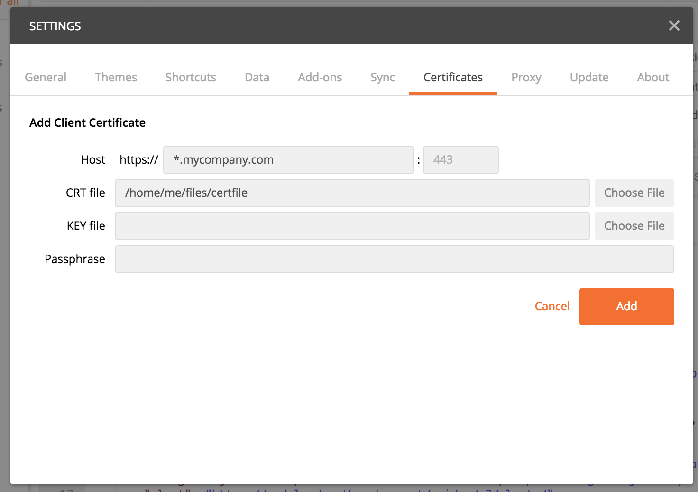
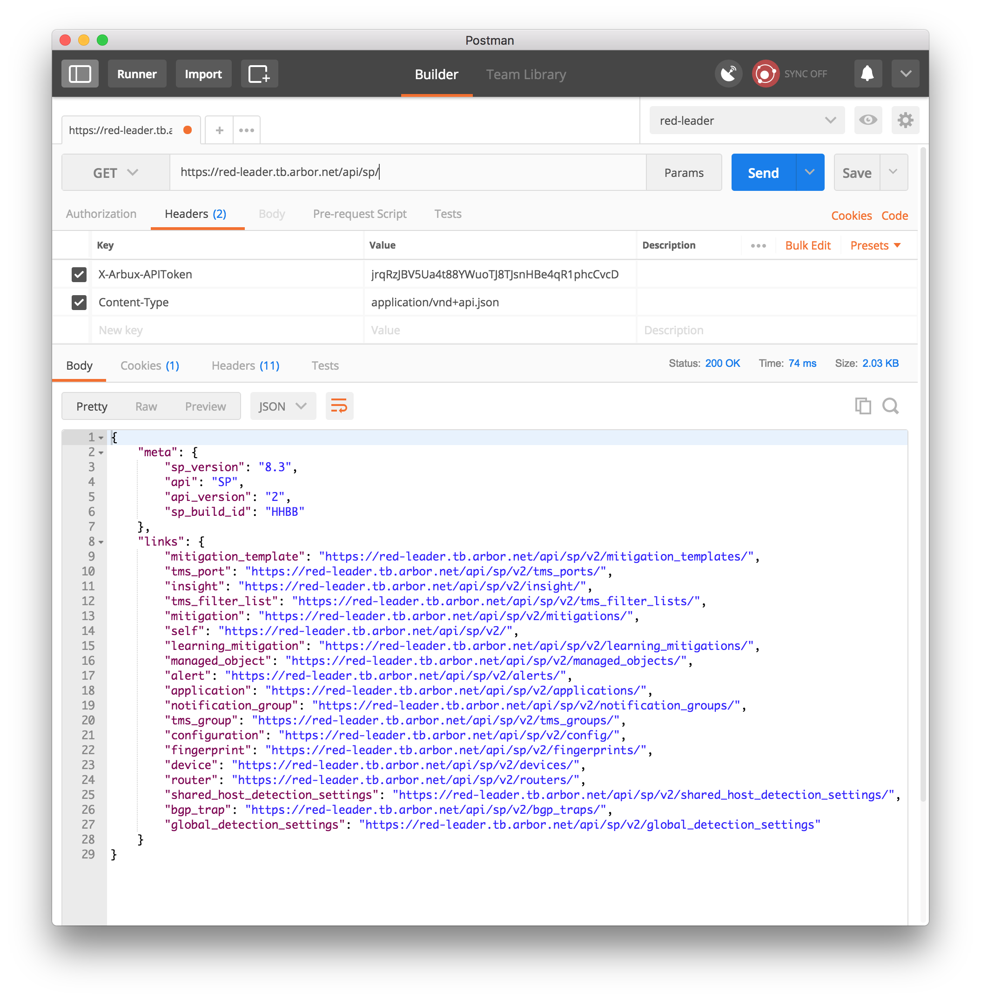
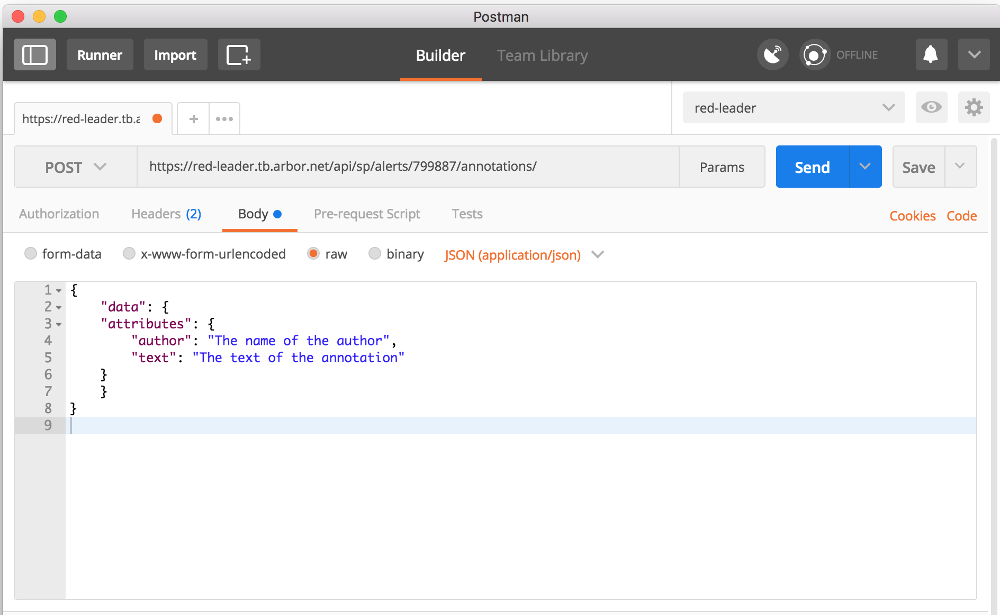
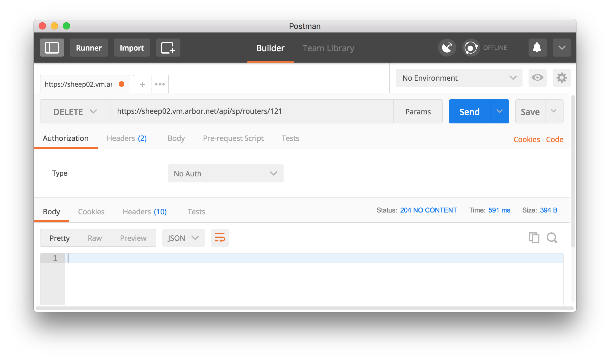
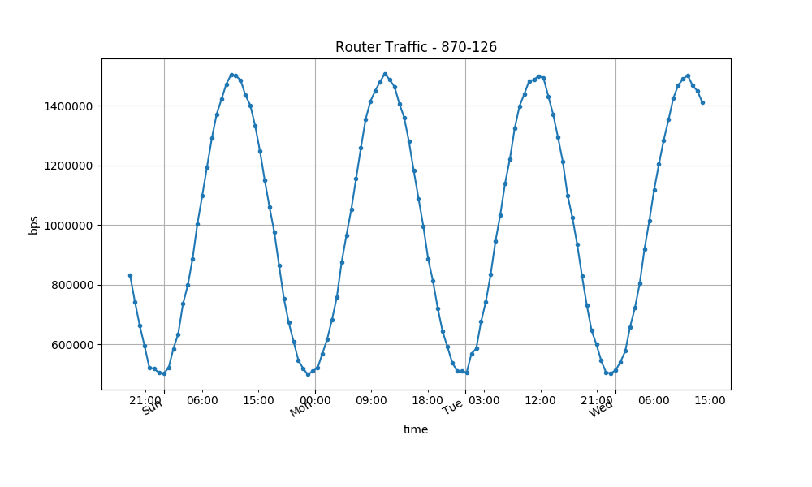
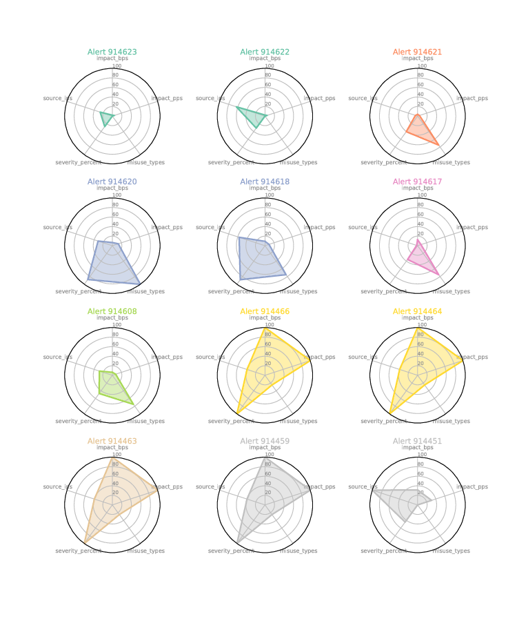

SP REST API Cookbook
SP v8.4
API v4
Table of Contents
- 1. Introduction
- 2. Set-up
- 3. Reports
- 3.1. Example: Time between an Alert and a Mitigation
- 3.2. Example: The Collector with the most system alerts
- 3.3. Example: Plotting Alert Data
- 3.4. Example: Using Alert Details to create radar plots of alert characteristics
- 3.5. Example: Attacks Grouped by CIDR Block
- 3.6. Example: Differences in output between accounts with different authorization
- 3.7. Using the SP REST API to write a client that supports caching (or Why the Sub-Object JSON is so Deeply Nested)
- 4. Configuration
- 5. Operations
- 6. Insight
- 7. Examples in Languages other than Python
- 8. Appendices
1 Introduction
Arbor Networks SP is a very sophisticated piece of software that gives visibility into the network traffic on networks ranging up to those that are massively large; SP support hundreds of configuration parameters for defining what exactly visibility means and the reported data from SP is very rich and very broad. Almost no network operators who use SP make use of the entire range of its capabilities.
The configuration of SP and the management of its data is done in two ways: the SP web-based UI and the web-based API interfaces to SP. While SP has had APIs for many versions, the versions starting with 8.1 have had a REST API as one of the options for configuration and data retrieval.
This book describes how to programmatically configure SP and get data about your network from SP using a json:api-based REST API to SP.
REST is a common, HTTP-based protocol that defines web-based services that allow clients (sometimes called “requesting systems”) to access and manipulate textual representations (in the case of SP, JSON representations) of SP configuration and reporting data (generically called “Web resources”) using a uniform and predefined set of stateless, from the client’s perspective, operations. All of the state, configuration and data, is maintained within SP, not by the API client. The API described here is the SP REST API. SP has other APIs (SOAP and WebServices) that are documented in other SP documentation. The intent of the SP REST API is to, over time, include all of the functionality of the SOAP and WebServices API, at which point those will be deprecated.
The SP REST API uses a particular API-focused JavaScript Object Notation (JSON) format to represent its data. JSON is a textual representation of data in collections (Python calls these dictionaries, C calls them structures, Go calls them maps, Ruby and Perl call them hashes) and lists (Python and Perl also calls them lists, Go calls them slices, C and Ruby call them arrays). The elements in collections and lists are other collections, other lists, Boolean values, numeric values, or string values as described by the JSON specification (http://www.json.org/). The particular JSON representation that the SP REST API adheres to is called json:api (http://jsonapi.org/); the rules and guidelines described in Version 1.0 of the json:api specification are implemented for the SP REST API.
The SP REST API is under development. Each release of Arbor Networks SP after version 8.0 includes a REST API that has more features than the prior release. Arbor Networks expects that the REST API will not be complete for several years, but incremental steps will be included in each version of SP. This book describes Version 3 of the API that is included in SP 8.3. (The versioning mechanism is described in more detail in the section 1.3.)
This book is intended for the SP administrator or advanced user who has some programming or shell scripting experience and who wants to automate network management or reporting tasks, or combine SP data with other sources of data for reporting, configuration, or decision making.
1.1 Conventions Used in this Book
Things in a fixed-width font are either input or output, for the most part.
See the section 8.4 for advice on how to provide feedback.
This is a collaborative document, feedback, additions, edits, changes, modifications, etc. are all greatly appreciated. Please see the section 8.6 for advice on ways to contribute.
The examples that were written for a version of SP and its REST API
will report their version in both their meta object and in the
URLs; those examples are not generally reproduced for the latest
version, but also should continue to work even on the latest
version (as well as on the prior version of the API in newer
versions of SP. Put another way, if you see an example that uses a
URL with a specific /v[VersionNumber]/ in it or example output
that includes a meta object like
"meta": {
"api": "SP",
"api_version": "3",
"sp_build_id": "HGRD",
"sp_version": "8.3"
}
you can, in probably all cases, use the latest version of SP and the REST API safely. Alternatively, you can use the latest version of SP and the specified version of the REST API.1
1.2 SP APIs
Arbor Networks SP has three officially supported types of APIs: the SOAP API, the WebServices API, and the REST API.
The SOAP and WebServices API are documented in the online SP documentation and in the API software development kit available from the SP web UI at the Administration > Download Arbor API SDK menu item.
Arbor Networks has decided to focus on the REST API (the topic of this book) for its future development with the goal of encompassing the functionality of the other APIs, the SP command-line interface, and all of the functionality provided by the web-based UI that is the most familiar to SP users.
As you develop clients for SP’s APIs, keep in mind that the REST API is the officially preferred API for SP. However, in this version (and, likely, several upcoming versions), the REST API does not provide all of the functionality of the SOAP and WebServices APIs. Arbor recommends using the REST API where you can in your clients, and augmenting it with API requests to the other APIs, replacing those requests as the REST API gains functionality.
1.3 Guiding Principles of the SP REST API
As Arbor Networks develops the REST API, we abide by some standards and principles that you can rely on as you you create API clients.
1.3.1 JSON API
The first of these guidelines is that the structure of the JSON that is used for input and output from the API follows the JSON API specification (http://jsonapi.org/). While you don’t need to understand the specification to use the SP REST API, it may help answer some questions about why things are the way they are in the API, and how Arbor is likely to handle future additions to the API.
1.3.2 Useful Errors for Humans and Computers
The second guideline is that the SP REST API should provide you with useful error messages that can be interpreted by both a human and a computer program. Arbor makes use of a combination of HTTP response codes as described in Section 10 of RFC 2616 (https://www.ietf.org/rfc/rfc2616.txt) and error objects that contain some or all of an error title string, an error detail string, an HTTP status code string, and a pointer to the error in the input. An example error object that resulted from the REST client requesting a nonexistent endpoint is:
{
"detail": "Resource https://leader.example.com/api/sp/asdf could not be found.",
"meta": {
"api": "SP",
"api_version": "2",
"sp_build_id": "HGRD",
"sp_version": "8.3"
},
"status": "404",
"title": "Missing resource error."
}
This error object contains the error detail, status code, and
title along with the standard "meta" section which gives
information about the API itself. Error objects are further
described in the JSON API specification in the Errors section
(http://jsonapi.org/format/#errors).
1.3.3 Backward compatibility
Another guideline is that the REST API will maintain backward-compatibility as it increases in version. The version for the API is a combination of the SP version and the API version number; in the example above the API version would be reported as “SP v8.3, API v2”. It is possible that there will be an API v2 for SP v8.2.3 that is different from the API v2 for SP v8.3. Arbor Networks will retain at least one prior version of the API in each version of SP so if you have written clients that use v3 of the API in SP v8.4 and upgrade to SP v8.5 that defaults API v4, you can still access API v3 in SP v8.5 with your clients while you work to migrate them to the latest version. API version increases will happen when Arbor Networks introduces a change in the API that could potentially break existing clients; this includes things like changing the name of an API key, changing the type of an API value, or removing an API endpoint. Adding keys and endpoints is not considered breaking, as well-written API clients should ignore extra data returned to them.
1.3.4 Discoverability
Arbor Networks makes every effort to ensure the SP REST API is
fully discoverable from the root URL, /api/sp/. Starting there,
every response you receive may contain an object called
relationships that will lead you to the related objects. There
are no detached nodes of the API tree. This is called Hypermedia
as the Engine of Application State (HATEOAS) and is defined2
by Roy T. Fielding (the inventor of REST) as:
A REST API should be entered with no prior knowledge beyond the initial URI (bookmark) and set of standardized media types that are appropriate for the intended audience (i.e., expected to be understood by any client that might use the API). From that point on, all application state transitions must be driven by client selection of server-provided choices that are present in the received representations or implied by the user’s manipulation of those representations. The transitions may be determined (or limited by) the client’s knowledge of media types and resource communication mechanisms, both of which may be improved on-the-fly (e.g., code-on-demand).
In the case of the SP REST API, the “initial URI” is
https://sp-leader.example.com/api/sp/ and following that
the elements in the links objects provide connectivity to the
rest of the API.
1.4 Online Reference Manual
The SP REST API includes a reference manual for each endpoint with a description of each key in that endpoint; there are very few examples of using the API in the reference manual (hence this book), but all of the endpoints and their properties are listed for all of the versions of the API supported on the installed version of SP.
In addition, changes between versions are in the Deprecation Policy section of the reference manual.
This book will often make reference to the online reference manual; having access to that manual will be helpful as you develop clients. The online reference manual is available from the Arbor SP UI by selecting the “REST API Documentation” from the “Administration” menu. A PDF copy of this is available from your local engineer or from the Arbor Technical Assistance Center.
2 Set-up
2.1 Permissions, Access Tokens, and SSL Certificates
The current version of the SP REST API does not support
authorization. That is, granting someone an API access token is
the same as granting them “admin” access to the SP deployment.
2.1.1 Access Tokens
SP REST API tokens are created from the SP command line interface with the command:
/ services aaa local apitoken generate admin "comment"
where admin is the username of the administrative user and
"comment" is a useful comment for you. Arbor recommends the
local name of the user and the date the token is created, for
example:
/ services aaa local apitoken generate admin "fred@example.com 2017-07-01"
You can list the tokens that have been created with the command:
/ services aaa local apitoken show
which will result in a list of API tokens and their associated comments, something like this:
admin: wz8SmDeJRSkz_0kNbdSajSQ_Jk82EVOqRU6CPU_O susy@example.com - 2017-06-01 YK3va5ATpXdmTWwfgzZPBckrj7zue205CzjLBtK5 fred@example.com - 2017-07-01
To remove the token YK3va5ATpXdmTWwfgzZPBckrj7zue205CzjLBtK5 type
the command:
/ services aaa local apitoken remove YK3va5ATpXdmTWwfgzZPBckrj7zue205CzjLBtK5
2.1.2 SSL Certificates
All SP REST API requests should use the secure HTTP transport
(https). This will ensure that your API key and the contents of
requests and responses are encrypted. In addition, SP will
attempt to redirect unencrypted HTTP requests to the encrypted
port, but that can affect the use of the POST and PATCH options.
SP comes with its own SSL certificate, and your organization may
also add their own; to verify that your communications are secure,
you will need a copy of that certificate. The person who
maintains your SP deployment should be able to provide that to
you; if you have shell access to the SP leader, the file
containing the certificates is at /etc/ca-bundle.crt. Copying
that file to your API client’s environment will allow you to refer
to it. In the examples in this book that file is referred to at
certfile in most places.
2.2 Useful Tools
When working with REST APIs there are several common actions that you will take: getting data from the API, processing retrieved data, and sending data to the API. There are many free programs that can help you do this in an interactive way. This can be useful during development of more complicated programs, for quick API queries that don’t require a whole program, for use in a shell script, or for interactively working the SP REST API.
Examples later in this book will make use of at least some of these tools.
2.2.1 Any web browser
The SP API is available via any web browser by simply going to a
URL of the form https//spleader.example.com/api/sp/; this
will present a nicely formatted web page showing the request and
the results. It’s not as convenient as other tools (cURL or
HTTPie, see the following section) for actions other than GET, but
as a quick test of an API request, it can be very handy. An
example of how it looks is in Figure 1.

Figure 1: The SP REST API can be accessed using a web browser and the query and results are displayed nicely.
2.2.2 cURL
cURL is a classic program (dating back to 1997) for accessing HTTP services from the command line. It is open source and available for free from the main cURL website http://curl.haxx.se or via package managers for your platform. cURL is available for 34 different operating systems, so should work in almost all scenarios. There are more modern and feature-rich tools for accessing REST APIs (or other HTTP services), but cURL is nearly ubiquitous.
- Getting data with cURL
An example of using cURL to get data from SP via the SP REST API is:
curl --cacert certfile --ssl -X GET -H "Content-Type:application/vnd.api+json" -H "X-Arbux-APIToken:wz8SmD3JRSKz_0kNbdSejSQ_Jk92EVOqRU6CPU_O" https://leader.example.com/api/sp/
In order of appearance, the options used in the
curlcommand above are:--cacert certfiletellscurlto use the SSL certificate calledcertfile(more on this later)--ssltellscurlto use Secure Sockets Layer (SSL) for its connection-X GETtellscurlto issue an HTTPGETcommand (more on this later, too)-H "Content-Type:application/vnd.api+json"sends the HTTP headerContent-Typeset to the value ofapplication/vnd.api+json. Other than the endpoints at/insight/, all of the SP API uses this content type-H "X-Arbux-APIToken:wz8SmD3JRSKz_0kNbdSejSQ_Jk92EVOqRU6CPU_O"sends the HTTP headerX-Arbux-APITokenset to the value of the API key that was set via the SP command linehttps://leader.example.com/api/sp/which is the URL (hostname and endpoint) that is requested. In this case, it is the index endpoint for the API.
The output of this particular command is the index of the SP REST API represented as a JSON object (defined by the outer-most curly braces) with two JSON objects in it,
metaandlinks.Successful requests for data from the SP REST API will return the requested data along with the HTTP status code
200 OK. - Sending data with cURL
An example of using cURL to send data to SP via the SP REST API is:
curl --cacert certfile --ssl -X POST -H "Content-Type:application/vnd.api+json" -H "X-Arbux-APIToken:wz8SmD3JRSKz_0kNbdSejSQ_Jk92EVOqRU6CPU_O" -d @input.json https://leader.example.com/api/sp/alerts/12519/annotations/
In order of appearance, the options used in the
curlcommand above are:--cacert certfiletellscurlto use the SSL certificate calledcertfile(more on this later)--ssltellscurlto use Secure Sockets Layer (SSL) for its connection-X POSTtellscurlto issue an HTTPPOSTcommand (more on this later, too)-H "Content-Type:application/vnd.api+json"sends the HTTP headerContent-Typeset to the value ofapplication/vnd.api+json. Other than the endpoints at/insight/, all of the SP API uses this content type-H "X-Arbux-APIToken:wz8SmD3JRSKz_0kNbdSejSQ_Jk92EVOqRU6CPU_O"sends the HTTP headerX-Arbux-APITokenset to the value of the API key that was set via the SP command line-d @input.jsontells cURL that the data to be sent can be found in the file namedinput.jsonhttps://leader.example.com/api/sp/alerts/12519/annotations/which is the URL (hostname and endpoint) to which the data will be sent. In this case, it is an alert annotation for the alert with id 12519.
Although this will be discussed in more depth later in this book, the format of the data for an alert annotation (in this example, the contents of the file
input.json) is:{ "data": { "attributes": { "author": "The name of the author", "text": "The text of the annotation" } } }Using the HTTP verb
PATCHto change data is very similar to how thePOSTverb is used.Successful API
POSTandPATCHrequests will return all of the data for the object that was created or modified along with either a200 OKor201 Createdstatus code. - Deleting data with cURL
An example of using cURL to delete data from SP via the SP REST API is:
curl --cacert certfile --ssl -X DELETE -H "Content-Type:application/vnd.api+json" -H "X-Arbux-APIToken:wz8SmD3JRSKz_0kNbdSejSQ_Jk92EVOqRU6CPU_O" https://leader.example.com/api/sp/routers/132
In order of appearance, the options used in the
curlcommand above are:--cacert certfiletellscurlto use the SSL certificate calledcertfile(more on this later)--ssltellscurlto use Secure Sockets Layer (SSL) for its connection-X DELETEtellscurlto issue an HTTPDELETEcommand (more on this later, too)-H "Content-Type:application/vnd.api+json"sends the HTTP headerContent-Typeset to the value ofapplication/vnd.api+json. Other than the endpoints at/insight/, all of the SP API uses this content type-H "X-Arbux-APIToken:wz8SmD3JRSKz_0kNbdSejSQ_Jk92EVOqRU6CPU_O"sends the HTTP headerX-Arbux-APITokenset to the value of the API key that was set via the SP command linehttps://leader.example.com/api/sp/routers/132which is theURL (hostname and endpoint) that identifies what resource in SP will be deleted. In this case, it is the router with id 132.
API delete requests do not return any data, since the SP object you were acting on is now gone. The HTTP status code that will be returned for successfully deletions is
204 No Content.
2.2.3 HTTPie
HTTPie is a Python program that is much newer than cURL (although has still seen a lot of development; the initial commit to Github was on 25 February 2012) and has some conveniences that cURL doesn’t. The biggest convenience, in my opinion, is the ability to save configuration data for a host, and select which host configuration to use when the the command is run.
HTTPie is open source and available for free from https://httpie.org/ or via package managers for your platform. HTTPie is based on Python, so is available for any platform that supports Python. There are installation instructions for MacOS, Linux, and Windows at https://httpie.org/doc#installation.
Among the Arbor Networks engineers, HTTPie is widely used.
- Configuring HTTPie
There is much more information on the configuration of HTTPie in its online documentation, but the two things that might be useful are setting the defaults and creating some sessions.
HTTPie’s configuration is kept in a simple JSON-formatted file called
config.json(see https://httpie.org/doc#config-file-location for more); a good start for configuration is:{ "__meta__": { "about": "HTTPie configuration file", "help": "https://github.com/jkbrzt/httpie#config", "httpie": "0.9.4" }, "default_options": [ "--verify=/path/to/a/ssl/certfile", "--session=spleader.my.example.com", "--timeout=60", "--follow" ] }The
"__meta__"section comes with HTTPie, and the default options set:- the path to a SSL certificate file bundle
- the default connection information (what HTTPie calls a session)
- a useful timeout value of 60 seconds
- the option to follow HTTP redirects
Once you have created
config.jsonyou can add some information to the saved session by typing all of the information once on the command line. The information the SP REST API needs is theContent-TypeandX-Arbux-APITokenheaders; this is entered by typing:http https://spleader.example.com/api/sp X-Arbux-APIToken:wz8SmD3JRSKz_0kNbdSejSQ_Jk92EVOqRU6CPU_O Content-Type:application/vnd.api+json
(replacing, of course, the hostname and API token in that example with your own hostname and API token). After you do that once, you can then type:
http https://spleader.my.comany.com/api/sp
and the configuration will read the data from the saved file. Save session information is in the
.httpie/sessions/directory and are JSON files in directories named after the host. - Getting data with HTTPie
Replicating the cURL example from earlier, getting the SP REST API index using HTTPie, after following the configuration steps, is done using the command:
http GET https://spleader.example.com/api/sp/
When HTTPie detects that is is writing to the terminal, it will include additional information that might look about like:
HTTP/1.1 200 OK
Connection: Keep-Alive
Content-Length: 1593
Content-Security-Policy: default-src ’self’ ’unsafe-inline’ ’unsafe-eval’
Content-Type: application/vnd.api+json
Date: Tue, 01 Aug 2017 00:55:31 GMT
Keep-Alive: timeout=15, max=10000
P3P: policyref=“/w3c/p3p.xml”, CP=“NOI DSP COR TAIa OUR NOR UNI”
Server: Apache
Strict-Transport-Security: max-age=1261440000
Via: 1.1 127.0.0.1
X-Frame-Options: SAMEORIGIN
when HTTPie thinks it is directing its output somewhere else, it will not print this information; if you want to override HTTPie’s decisions about this, there are command-line options to do so.
- Sending data with HTTPie
An example of using HTTPie to send the same data to SP we sent via the SP REST API is using cURL earlier is (see
input.jsonin the cURL example of sending data to SP):cat input.json | http POST http https://spleader.example.com/api/sp/alerts/12519/annotations/
The two differences between getting and sending data to SP via the REST API using HTTPie are:
- using the
POSTverb instead of theGETverb before the URL - the data you want to send to SP via the REST API is in the
same format as in the cURL example, but it is piped into the
httpcommand
To make changes to SP via the REST API, you can use the
PATCHverb to HTTPie instead ofPOST. There will be more examples of this later. - using the
- Deleting data with HTTPie
Repeating the example of deleting data from the cURL section, the syntax for using HTTPie to delete data from SP via the SP REST API is:
http DELETE https://spleader.example.com/api/sp/routers/132
The SP REST API will return the HTTP status code
204 No Contentand HTTPie will print this if you aren’t piping or redirecting the output somewhere else.
2.2.4 Postman
Postman is an application that provides a graphical user interface for working with REST APIs. It is free to use the basic version, with the versions more suitable for development enterprises costing money. Postman is available from https://www.getpostman.com/ for MacOS, Linux, and Windows. It is also available in the Chrome App Store as a plug-in for the Google Chrome web browser3.
Among the Arbor Networks engineers, Postman is widely used.
- Configuring Postman
If you are installing the Postman client there are three configuration settings you need to make before using it with the SP REST API; adding the certificate bundle and adding the
Content-TypeandX-Arbux-APITokenheaders. If you are using the Postman Chrome app, you don’t need to add the certificates; Postman will use those in your browser, but you may still have to add them to your browser.To add the SP certificate bundle to the Postman application, select the wrench icon in the upper right part of the Postman window and choose Settings from the menu. In the resulting window, choose the Certificates option from the top row of options, then click Add Certificate. In the Host text entry field, type
*.mydomain.com(replacingmydomain.comwith the domain where your SP leader is), and in the CRT File text entry field type the path to the certificate bundle for your SP environment. It should look something like what is shown in Figure 2.
Figure 2: The Postman certificate configuration window should look similar to this, with your information filled in; if you are using the Chrome app, you won’t see the Certificates option in the top row; Postman will use your browser’s certificates.
For both the application and Chrome app you will need to set the
Content-TypeandX-Arbux-APITokenheaders. This is done in the Headers section that is immediately below the URL entry field (after making a request, there will be another Headers section for the response). You simply type in each key and the values for them. For all of the SP REST API endpoints except those under/insight/you must setContent-Typetoapplication/vnd+api.json; for the endpoints under/insight/you must setContent-Typetoapplication/json. - Getting data with Postman
Following the cURL and HTTPie examples, to get the SP REST API index using Postman you make sure that
GETis selected to the left of the text entry box that says “Enter request URL”, then enter the URL for the index endpoint (https://spleader.example.com/api/sp/) and press the Send button. The results (the body, cookies, and headers) will appear in the bottom pane. It will look something like what is shown in Figure 3.
Figure 3: Retrieving data from the SP REST API using Postman is done by setting the two headers shown, entering a URL, and pressing the Send button. The data retrieved is displayed in the lower pane.
- Sending data with Postman
Once again using the same
input.jsonfile from earlier, we will set an annotation on an alert, this time using Postman.The steps in Postman to get ready to send date are:
- change the HTTP verb to the left of the URL from
GETtoPOST - enter the URL to which you are sending the data in the text entry box that says “Enter request URL”
- select Body from the items below the URL
- select raw from the items above the text entry box
- select JSON from the dropdown to the right of type selections
- enter the JSON body you are sending in the text box.
Having done all of those steps, you should have something that looks like Figure 4.

Figure 4: Sending data to SP using the REST API and Postman is done by setting the HTTP verb to POST, filling in the URL, selecting the Body option, then the raw option and the JSON type, and filling in the JSON body. Once that is complete, press the Send button.
After sending the body with the correct settings, the results will appear in the bottom text area in Postman.
- change the HTTP verb to the left of the URL from
- Deleting data with Postman
Repeating the example of deleting data from the cURL and HTTPie sections, the method for using Postman to delete data from SP via the SP REST API is to enter the URL for the object you want to delete, change the HTTP verb to Delete, and press the Send button.
The SP REST API will return the HTTP status code
204 No Contentand no body content.After a successful DELETE operation you should have something that looks like Figure 5.

Figure 5: Deleting data from SP using the REST API and Postman is done by selecting the
DELETEHTTP verb from the menu, entering the URL of the item to be deleted and pressing Send. There will be no content in returned but on the right side just above the (empty) returned data box the status will read204 NO CONTENT.
2.2.5 jq
jq is a JSON parsing and manipulation tool in the spirit of
what sed4 and awk5 are for text.
jq is free and open-source; it is available at
https://stedolan.github.io/jq/ for MacOS, Linux, and Windows or
via package managers for your platform. The C source code and
build instructions are available at https://github.com/stedolan/jq
for other platforms.
jq is very powerful, but complicated. It can be used to extract
subsets of data from JSON input, search for keys or values in JSON
data and only print the objects that match the search criteria,
select and recast data from JSON input into different JSON
output. The complete manual is available at the jq website, but
we will provide a few examples of using jq with the JSON from
the SP REST API.
- Extracting only names, descriptions, and ids of routers into a new JSON format
The HTTPie command to get the router information from SP using the REST API is:
http https://leader.example.com/api/sp/routers/
but on a system with 12 routers this results in 503 lines of JSON output. If all you need is the id, name, and description of each router, that is a lot of information to deal with.
Using
jqwe can extract the 36 pieces of data that we need.Looking at the original output from the
/routers/endpoint, we need to make note of two things: the information we want is in a list of objects in the"data"object; the fields we want are at the top level of each data object ("id") and in the"attributes"sub-object for each data object.The first thing we can do is have
jqprint each object in the"data"list by giving it the filter.data[]which means “from the top level (.) print every element[]in the"data"array”. In practice this looks like:http https://leader.example.com/api/sp/routers/ | jq '.data[]'The
jqfilter is in single-quotes to prevent the square brackets from being interpreted by the shell.jquses periods to denote the JSON hierarchy (that’s why.datastarts with a period, it is the root of the JSON tree), the pipe (|) character to chain together its filters, and commas to group elements together for selection.So the next thing we can do is extract one element from the JSON output of the SP REST API by adding it to the
.data[]filter. To get the names of the routers we can add.attributes.name(remember,"name"is in the"attributes"subobject of data. On the command line this looks like:http https://leader.example.com/api/sp/routers/ | jq '.data[].attributes.name'This will print a list of the names of all of the routers configured in SP. This is part of our original goal, but we still also want the id and description of the routers.
To select more than one element,
jqsupports sending each list item over which it is iterating to a group of elements for selection. To get the router id and description along with the name, we can type:http https://leader.example.com/api/sp/routers/ | jq '.data[] | .id,.attributes.name,.attributes.description'This will then print a list that is something like:
"121" "rtr1.nyc" "a router in New York" "122" "rtr2.chi" "a router in Chicago" "123" "rtr3.lax" "a router in Los Angeles" "124" "pigeon.net" "See RFC 1149"
where the order of the elements is the same order as they were requested in the filter. But this isn’t very easy to read, and is not very useful as input to computer programs.
jqcan do better.To make JSON-compliant output that is easy to read and easy for another computer program to ingest,
jqneeds to know how things should be grouped.http https://leader.example.com/api/sp/routers/ | jq '{"routers": [.data[] | {id:.id,name:.attributes.name,description:.attributes.description}]}'will print a list that looks something like:
{ "routers": [ { "id": "121", "name": "rtr1.nyc", "description": "a router in New York" }, { "id": "122", "name": "rtr2.chi", "description": "a router in Chicago" }, { "id": "123", "name": "rtr3.lax", "description": "a router in Los Angeles" }, { "id": "124", "name": "pigeon.net", "description": "See RFC 1149" } ] }While this example is for four routers, with the original example of 12 routers we have gone from 503 lines of JSON output to 64 lines, removing the 87% of the data we didn’t need using one filter in
jq. - Extracting alerts that have a severity percentage above 200
jqcan also look for certain properties of objects and print only the objects that have those properties.For example, a typical alert from the SP REST API looks like:
{ "data": { "attributes": { "alert_class": "dos", "alert_type": "dos_host_detection", "classification": "Possible Attack", "importance": 2, "ongoing": true, "start_time": "2017-08-01T19:44:45+00:00", "subobject": { "fast_detected": false, "host_address": "192.168.12.203", "impact_boundary": "rtr1.nyc", "impact_bps": 8251040, "impact_pps": 3010, "ip_version": 4, "misuse_types": [ "icmp", "total", "dns", "udp" ], "severity_percent": 153, "severity_threshold": 1000, "severity_unit": "bps", "summary_url": "/page?id=profile_summary&gid=154" } }, "id": "799318", "links": { "self": "https://leader.example.com/api/sp/v3/alerts/799318" }, "relationships": { "annotations": { "data": [ { "id": "1492098", "type": "alert_annotation" }, { "id": "1492097", "type": "alert_annotation" }, { "id": "1492096", "type": "alert_annotation" }, { "id": "1492095", "type": "alert_annotation" }, { "id": "1492094", "type": "alert_annotation" }, { "id": "1492093", "type": "alert_annotation" } ], "links": { "related": "https://leader.example.com/api/sp/v3/alerts/799318/annotations/" } }, "device": { "data": { "id": "115", "type": "device" }, "links": { "related": "https://leader.example.com/api/sp/v3/devices/115" } }, "managed_object": { "data": { "id": "154", "type": "managed_object" }, "links": { "related": "https://leader.example.com/api/sp/v3/managed_objects/154" } }, "packet_size_distribution": { "data": { "id": "packet-size-distribution-799318", "type": "alert_packet_size_distribution" }, "links": { "related": "https://leader.example.com/api/sp/v3/alerts/799318/packet_size_distribution" } }, "patterns": { "links": { "related": "https://leader.example.com/api/sp/v3/alerts/799318/patterns/" } }, "router_traffic": { "links": { "related": "https://leader.example.com/api/sp/v3/alerts/799318/router_traffic/" } }, "traffic": { "data": { "id": "alert-traffic-799318", "type": "alert_traffic" }, "links": { "related": "https://leader.example.com/api/sp/v3/alerts/799318/traffic" } } }, "type": "alert" }, "links": { "self": "https://leader.example.com/api/sp/v3/alerts/799318" }, "meta": { "api": "SP", "api_version": "2", "sp_build_id": "HHAB", "sp_version": "8.3" } }which is a lot of information to parse; using
jqyou can filter the data after the API returns it to you (there is some filtering available via the API that happens on the SP side before returning data to you, but it is limited; this will be discussed later).If you want only the alerts out of the most recent 50 that have severity percents (in
jqpath representation,.data[].attributes.subobject.severity_percentgreater than 200,jqcan select those alerts.The first step is the same as it was in the previous example, get each object out of the data list:
http https://leader.example.com/api/sp/alerts/ | jq '.data[]'The second step is to make the selection using
jq’s pipe functionality and put the results into a list by adding square brackets around the whole statement:http https://leader.example.com/api/sp/alerts/ | jq '[.data[] | select(.attributes.subobject.severity_percent>200)]'To verify that this is returning only alerts with a severity percent greater than 200 we can add
| .[].attributes.subobject.severity_percentto the queryhttp GET https://leader.example.com/api/sp/alerts/ | jq '[.data[] | select(.attributes.subobject.severity_percent>200)] | .[].attributes.subobject.severity_percent'301 374 262 342 374 402 342 443 373
These are only two examples of what
jqcan help you with when you are faced with a lot of JSON data, the manual and some experimentation will be very useful in usingjqin your particular environment.
2.3 The Python Environment
Most of the examples in this book will be in the Python (http://www.python.org) programming language—it is an easy-to-read language even if you aren’t familiar with it; Python is available for nearly every operating system; and it includes nearly everything you need (“The Python source distribution has long maintained the philosophy of ”batteries included“ – having a rich and versatile standard library which is immediately available, without making the user download separate packages. This gives the Python language a head start in many projects.”).
A standard Python installation includes everything you need to
access the SP REST API and process data from it—an HTTP library
(httplib) and a JSON library (json). However, the httplib
documentation (at https://docs.python.org/2/library/httplib.html)
says “The Requests package is recommended for a higher-level HTTP
client interface.”
The examples in this book will make significant use of the Requests library; you will be able to follow along with nearly all of the examples using only that additional library. If we use other libraries (for example, for accessing databases, creating web pages, etc.) we will go into more depth about those at the time.
2.3.1 The requests library
The Python Requests library documentation at https://requests.readthedocs.io/ purports:
Requests is the only Non-GMO HTTP library for Python, safe for human consumption.
and warns:
Recreational use of the Python standard library for HTTP may result in dangerous side-effects, including: security vulnerabilities, verbose code, reinventing the wheel, constantly reading documentation, depression, headaches, or even death.
Installation instructions for the requests library are at the
readthedocs site at
https://requests.readthedocs.io/en/master/user/install/, but
mostly comprise pip install requests. (And if you haven’t got
pip, see
http://docs.python-guide.org/en/latest/starting/installation/ for
installing it and a few other useful things).
Once you think you have the requests library installed, a simple
test is to follow the steps in this example (% is a Mac or Linux
shell prompt, and >>> is the interactive Python prompt):
% python
Python 2.7 (blah blah blah)
Type "help", "copyright", "credits" or "license" for more information.
>>> import requests
>>> rg = requests.get("http://www.google.com")
>>> rg
>>> <Response [200]>
>>> rg.headers
>>> {'Content-Length': '4740', 'X-XSS-Protection': '1; mode=block',
'Content-Encoding': 'gzip', 'Set-Cookie':
'NID=110=BXSpW6kxChyqif9p3Q0yFhL75QRsh0-C3vjFY_uTwpS-ANLlJsTjpC_9LypwgClOwL36COwCH6oAIBPfgcP-vZ4mwhpSqwM_UuG0pOpEGfDMDSKEtpK0mdHDaIqsEjR7;
expires=Sat, 24-Feb-2018 05:12:11 GMT; path=/;
domain=.google.co.nz; HttpOnly', 'Expires': '-1', 'Server': 'gws',
'Cache-Control': 'private, max-age=0', 'Date': 'Fri, 25 Aug 2017
05:12:11 GMT', 'P3P': 'CP="This is not a P3P policy! See
https://www.google.com/support/accounts/answer/151657?hl=en for
more info."', 'Content-Type': 'text/html; charset=ISO-8859-1',
'X-Frame-Options': 'SAMEORIGIN'}
If you get an error after you type import requests you haven’t
installed requests correctly, and may want to consult a local
expert for help. If you get a response other than <Response
[200]> after typing the requests.get line, you may not have
access to either http://www.google.com or to the Internet, both of
which would be a little odd, frankly, but that’s where you should
start looking.
2.4 Summary
At this point, you should be able to access your SP Leader’s REST
API using at least one of curl, httpie, or postman. You
might also be able to extract some sort of useful information using
the jq tool.
You should be able to make a simple HTTP request using Python and the Requests library.
The rest of this book will be examples of using these tools (and some examples in other programming languages) demonstrating how to do things with the SP REST API that will hopefully be a useful starting point for your own uses of the API.
3 Reports
The chapter describes how to produce reports from the data available from the SP REST API. This certainly isn’t an exhaustive list of reports you can produce, and the most interesting reports will be those you create by combining data from SP with data from other sources.
The difference between a report program and either configuration or
operational programs is that a report program only fetches data from
SP, it doesn’t not change the state of SP in any way (in
programmatic terms, the only HTTP verb used in these examples is
GET).
3.1 Example: Time between an Alert and a Mitigation
Arbor Networks SP can alert you to various kinds of network attacks by monitoring the network traffic across hundreds of routers and looking for anomalous behavior. In combination with Arbor Networks TMS applicances, these attacks can be mitigated by directing the odd traffic through a TMS for inspection and, if needed, cleaning.
SP and TMS support mitigating the anomalous traffic manually, where a network operator notices the alert, applies some other metrics to it, and then either decides to direct that traffic to a TMS or not. Monitoring the time between an alert and the manual mitigation can be useful. In addition, SP and TMS support automatic mitigation of traffic that generates an alert. Monitoring the time between the alert and the automatic mitigation can also be useful.
The steps to look at this are:
- establish a time period over which you want to produce this report
- collect the mitigations that were started in that time frame using the REST API
- extract from the mitigation information the related alerts
- collect the alert information about those specific alerts using the REST API
- for the group of manually started mitigations, collect the difference in start times for each mitigation
- do the same for the group of automatically started mitigations
Python supports command-line options very gracefully using the
included argparse library
(https://docs.python.org/2.7/library/argparse.html) but, for the
purpose of this example, we will simply hard-code what would
normally be options.
from __future__ import print_function import requests from datetime import datetime, timedelta from sys import stderr from time import mktime, strptime from urllib import urlencode from urlparse import urlparse, parse_qs CERT_FILE = "./certfile" TIMEFMT = "%a %b %d %H:%M:%S %Y" def get_mitigations(leader, key, start, end, page=1, perPage=50): """Recursively get pages of mitigations until the start date is reached or the last page is reached """ # set up the query string keys and values qs = dict() if page: qs['page'] = page if perPage: qs['perPage'] = perPage # build the URL MITIGATION_URI = '/api/sp/mitigations/?' URL = "https://" + leader + MITIGATION_URI URL += urlencode(qs) # make the API request api_response = requests.get( URL, headers={'X-Arbux-APIToken': key}, verify=CERT_FILE) # check the API response if api_response.status_code != requests.codes.ok: print("[ERROR] API responded with this error: " "{}\n(url: {})". format(api_response.reason, URL), file=stderr) return [] # convert the response to JSON and # get the 'data' element api_response = api_response.json() data = api_response['data'] # check if we're done or if we need # to call ourselves again specified_start = string_to_date(start) oldest_mit_on_this_page = None if 'start' in data[-1]['attributes']: oldest_mit_on_this_page = data[-1]['attributes']['start'] oldest_mit_on_this_page = string_to_date( oldest_mit_on_this_page) if (oldest_mit_on_this_page is None or oldest_mit_on_this_page > specified_start): # # parse out the last page from the links section # last_page = None if ('links' in api_response and 'last' in api_response['links']): last_page = int( parse_qs( urlparse( api_response['links']['last']).query )['page'][0] ) if last_page is not None and page < last_page: page += 1 # call ourselves again to get the next page d = get_mitigations(leader, key, start, end, page) data += d return data def get_alerts_from_mits(mits): """Not all mitigations have alerts, those will just be skipped, otherwise the alerts will be retrieved and a dictionary with mitigation information and alert start time will be populated and returned """ alerts = {} for mit in mits: if 'relationships' not in mit or 'alert' not in mit['relationships']: continue # there is no alert related to this mitigation if 'start' not in mit['attributes']: continue # mitigation was created but never started alert_id = mit[ 'relationships']['alert']['data']['id'] if alert_id not in alerts: alerts[alert_id] = {} mit_start_time = string_to_date( mit['attributes']['start']) alerts[alert_id][ 'mit_start_time'] = mit_start_time alerts[alert_id][ 'mit_type'] = mit['attributes']['subtype'] alerts[alert_id][ 'started_by'] = mit['attributes']['user'] return alerts def print_report(alerts, mitigations, sp_leader, start, end): """ print a simplistic report with a table of alerts """ print ("The time range for the report is") print (" from:", start.strftime(TIMEFMT)) print (" to:", end.strftime(TIMEFMT)) print ("Out of {} mitigations on {}, " "{} have associated alerts". format( len(mitigations), sp_leader, len(alerts.keys()) )) # re-organize alerts for printing by_user_type_time = {} for alert in alerts: started_by = alerts[alert]['started_by'] mit_type = alerts[alert]['mit_type'] a_to_m_secs = alerts[alert]['alert_to_mit_seconds'] if started_by not in by_user_type_time: by_user_type_time[started_by] = {} if mit_type not in by_user_type_time[started_by]: by_user_type_time[started_by][mit_type] = {} if a_to_m_secs not in by_user_type_time[started_by][mit_type]: by_user_type_time[started_by][mit_type][a_to_m_secs] = [] by_user_type_time[started_by][mit_type][a_to_m_secs].append(alert) # print the header row print ("{0:>20} | {1:<10} | {2:11} | {3}".format( "Mit. Started By", "Mit. Type", "Secs to Mit", "Alert Ids") ) print ("{0:>20} | {1:<10} | {2:11} | {3}".format( "-"*20, "-"*10, "-"*11, "-"*18) ) # Step through the re-organized data and print it for started_by in sorted(by_user_type_time): tmp_user = started_by for mit_type in sorted(by_user_type_time[started_by]): tmp_mit_type = mit_type for a_to_m_secs in sorted( by_user_type_time[started_by][mit_type]): print ("{0:>20} | {1:<10} | {2:11} | {3}". format( tmp_user, tmp_mit_type, a_to_m_secs, ", ".join(by_user_type_time[ started_by][ mit_type][ a_to_m_secs]))) tmp_mit_type = '' tmp_user = '' def get_alert_start_time(leader, key, alert): """Get an individual alert via the API and return its start time in python datetime format """ ALERT_URI = '/api/sp/alerts/' URL = "https://" + leader + ALERT_URI + alert api_response = requests.get( URL, headers={'X-Arbux-APIToken': key}, verify=CERT_FILE) if api_response.status_code != requests.codes.ok: print("[WARNING] In retrieving information " "about alert {}, the API responded `{}'". format(api_response.reason, alert), file=stderr) return None api_response = api_response.json() alert_start_time = string_to_date( api_response['data']['attributes']['start_time']) return alert_start_time def string_to_date(date_string): """Convert a string in the format YYYY-MM-DDThh:mm:ss to a Python datetime format """ if type(date_string) is datetime: return date_string # drop the time offset; if you are using different time zones, # don't do this date_string = date_string.split('+')[0] date_string = date_string.split('.')[0] # convert the time string into a Python datetime object date_string = strptime(date_string, "%Y-%m-%dT%H:%M:%S") date_string = datetime.fromtimestamp( mktime(date_string) ) return date_string if __name__ == '__main__': # # Set the start time to two weeks ago # and the end time to now # END_TIME = datetime.now() START_TIME = END_TIME + timedelta(-14) # # set the SP leader hostname and API key # SP_LEADER = 'leader.example.com' API_KEY = 'eFvokphdyGHA_M4oLlLtfDnlIf9bpjFnn0mWlDqw' mitigations = get_mitigations(SP_LEADER, API_KEY, START_TIME, END_TIME) if not mitigations: exit # # Create a dictionary of alert IDs that contains mitigation start # time and (later) the alert start time, the JSON of which would # look like: # { "<alert_id>": # { "mit_start_time": "<mitigation_start_time>", # "alert_start_time": "<alert_start_time>", # "mit_type": "{tms,blackhole,flowspec}" # } # } # alerts = get_alerts_from_mits(mitigations) alerts_to_remove = list() for alert in alerts: # Get the alert start time for each alert that appears in a # mitigation alerts[alert]['alert_start_time'] = get_alert_start_time( SP_LEADER, API_KEY, alert ) alert_start_time = alerts[alert]['alert_start_time'] if not alert_start_time: alerts[alert]['alert_to_mit_seconds'] = 'n/a' continue alert_start_time = string_to_date(alert_start_time) if alert_start_time < START_TIME or alert_start_time > END_TIME: alerts_to_remove.append(alert) # alerts[alert]['alert_to_mit_seconds'] = 'n/a' continue # Get the different in seconds between the # alert start and the mitigation start alerts[alert]['alert_to_mit_seconds'] = ( alerts[alert]['mit_start_time'] - alerts[alert]['alert_start_time'] ).total_seconds() # delete alerts from the list that are outside of the specific # time; this is needed because the mitigations come back in pages, # not necessarily scoped to the specified time frame for alert in alerts_to_remove: del alerts[alert] print_report(alerts, mitigations, SP_LEADER, START_TIME, END_TIME)
The time range for the report is
from: Tue Aug 29 10:45:05 2017
to: Tue Sep 12 10:45:05 2017
Out of 27 mitigations on leader.example.com, 24 have associated alerts
Mit. Started By | Mit. Type | Secs to Mit | Alert Ids
-------------------- | ---------- | ----------- | ------------------
admin | tms | 211.0 | 71
| | 213.0 | 72
| | 372.0 | 77
| | 481.0 | 65
| | 488.0 | 66
| | 497.0 | 67
| | 504.0 | 68
| | 551.0 | 1913
| | 558.0 | 1912
| | 740.0 | 75
| | 744.0 | 388
| | 819.0 | 387
| | 843.0 | 1910
| | 1255.0 | 1909
| | 1338.0 | 38
| | 1354.0 | 37
| | 1363.0 | 36
| | 1373.0 | 35
| | 2527.0 | 381
| | 4366.0 | 1865
| | 25051.0 | 294
| | 25058.0 | 295
| | 25065.0 | 292
| | 25072.0 | 293
3.2 Example: The Collector with the most system alerts
When operating an Arbor SP/TMS deployment, looking at system errors can helpful in diagnosing performance problems. The following Python program will gather a list of alerts in the alert class “system” and group them by appliance, then print them sorted by the number of alerts for each appliance.
"""Example SP API script to retrieve and summarize device system alerts.""" from __future__ import print_function import arrow # version: 0.10.0 import sys import re import requests # version: 2.18.4 import urllib # version: 1.17 CERT_FILE = './https_active.crt' def get_page_from_link(link): """Extract a page number from an API link.""" match = re.search(r'page=(\d+)', link) return int(match.group(1)) if match else None def api_request(url, key, body=None): """General function for making GET and POST requests. Response codes falling within 'requests.codes.ok' are assumed to have completed successfully. Supplying the optional 'body' parameter will change the request type to POST. Args: url (str): Valid URL to make request to. key (str): API key generated on the given SP leader. body (str): JSON formatted string containing post body content. Returns: dict: 'data' keyvalue of a requests.Response object. dict: 'meta' keyvalue of a requests.Response object. dict: 'links' keyvalue of a requests.Response object. """ headers = {'X-Arbux-APIToken': key, 'Content-Type': 'application/vnd.api+json'} if body is None: api_response = requests.get( url, headers=headers, verify=CERT_FILE) else: api_response = requests.post( url, data=body, headers=headers, verify=CERT_FILE) # Handle any API error responses. if (api_response.status_code != requests.codes.ok): print("API responded with this error: \n{}".format( api_response.text), file=sys.stderr) return ([], {}, {}) # Convert the response to JSON and return it api_response = api_response.json() return (api_response['data'], api_response['meta'], api_response['links']) def get_alerts(leader, key, start_time): """Retrieve alerts from an SP leader. Args: leader (str): SP leader from which the alerts originated key (str): API key generated on the given SP leader start_time (obj): arrow time object to be used a start_time filter for alerts. Returns: list: Alerts from the SP leader. """ alerts = list() # Retrieve the first page of data. (first_page, meta, links) = get_alerts_page(leader, key, start_time, 1) alerts.extend(first_page) # Retrieve first and last page numbers from the returned links. last_page_number = get_page_from_link(links["last"]) current_page_number = get_page_from_link(links["self"]) # Get all remaining pages, add the data while (current_page_number != last_page_number): current_page_number = current_page_number + 1 (current_page, meta, links) = get_alerts_page(leader, key, start_time, current_page_number) alerts.extend(current_page) return alerts def get_alerts_page(leader, key, start_time, page=1): """Retrieve a specific page of alerts from an SP leader. Args: leader (str): SP leader from which the alerts originated key (str): API key generated on the given SP leader start_time (obj): arrow time object to be used a start_time filter for alerts. page (int): The specific page of alerts to request. Returns: list: A specific page of alerts from the leader. """ # Craft the URL components. Filter on alert class and starting time. alert_uri = '/api/sp/v3/alerts/' filter_value = ("/data/attributes/alert_class = system AND " "/data/attributes/start_time > {0}".format( start_time.format('YYYY-MM-DD:HH:mm:ss'))) # Percent-encode our filter query. filter_value = urllib.quote(filter_value, safe='') # Add the parameters to the request url. params = list() filter_param = "filter={0}".format(filter_value) page_param = "page={0}".format(page) params = [filter_param, page_param] url = "https://{0}{1}?{2}".format(leader, alert_uri, "&".join(params)) # Make the api request and return its results. return api_request(url, key) def get_devices(leader, key): """Retrieve devices from an SP leader. Args: leader (str): SP leader to retrieve devices from. key (str): API key generated on the given SP leader Returns: list: Device data from the leader. """ device_uri = '/api/sp/v3/devices/' url = "https://{0}{1}".format(leader, device_uri) # Make the api request and return its results. (devices, meta, links) = api_request(url, key) return devices def main(): """Print a list of devices sorted by system alert count.""" SP_LEADER = 'leader.example.com' API_KEY = 'jrqRzJBV5Ua4t88YWuoTJ8TJsnHBe4qR1phcCvcD' # Create a start date one week before the current time. arrow_now = arrow.utcnow() start_time = arrow_now.shift(weeks=-1) # Get a list of all the system alerts starting later than # one week ago. alerts = get_alerts(SP_LEADER, API_KEY, start_time) # Get a list of all devices on the leader. devices = get_devices(SP_LEADER, API_KEY) # Transform the list into a dictionary keyed by device id. device_dict = {device["id"]: device["attributes"] for device in devices} # Create a dict keyed by device id containing a count # of system errors associated with that device. # We will use this data when displaying our list of collectors. alert_counts = {} for alert in alerts: try: device_id = alert["relationships"]["device"]["data"]["id"] except KeyError: continue alert_counts[device_id] = ( alert_counts[device_id] + 1 if device_id in alert_counts else 1) # Transform the dict into list of dicts containing id # and alert_count for each device. alert_count_list = [{"id": key, "alert_count": value} for key, value in alert_counts.iteritems()] # Sort the list in decending order by alert count. alert_count_list.sort(reverse=True, cmp=lambda x, y: cmp(x["alert_count"], y["alert_count"])) # Display a report of collectors sorted by the number of system alerts # found on each collector. header_format_string = ( "==== {alert_count:=<24} {name:=<20} " "{device_type:=<20} {ip_address:=<20}") # Display a header. print(header_format_string.format(alert_count="System Alert Count ", name="Device Name ", device_type="Device Type ", ip_address="IP Address ")) format_string = ( " {alert_count:<24} {name:20} " "{device_type:20} {ip_address:20}") # Display a row for each device with alerts. for device in alert_count_list: # Roll in our previously retrieved device data. device.update(device_dict[device["id"]]) print(format_string.format(**device)) if __name__ == "__main__": main()
The output from this is a list of SP appliances with the most system alerts, that looks something like:
==== System Alert Count ===== Device Name ======== Device Type ======== IP Address =========
79 my-leader pi 192.168.3.14
42 my-tra1 cp 192.168.3.15
19 my-tra2 cp 192.168.3.16
14 my-tms tms 192.168.3.17
7 my-backupleader pi 192.168.26.32
3.3 Example: Plotting Alert Data
The SOAP API can give you PNG files that you can use in your
reports. The REST API does not do that, but you can make your own
using Python and the additional library matplotlib6. This example
also introduces the arrow Python package7, which makes it easier
to deal with dates and time; it claims to offer “a sensible,
human-friendly approach to creating, manipulating, formatting and
converting dates, times, and timestamps” and, in this author’s
opinion, it delivers on that.
The steps to look at this are:
- choose an alert for which the traffic across the router is interesting
- get the
router_trafficdata from the API buy replacing theXin this URL fragment with the alert ID you are interested in:/api/sp/alerts/X/router_traffic/
- extract from the alert information the time-series data for router traffic
- turn the data into a time-series that
matplotlibcan consume and write out a file for each router involved
This Python program demonstrates reading alert data and using
matplotlib to make a plot of that data. The plot it creates
using the sample data monitored by SP is in Figure
6.

Figure 6: The SOAP API to SP can produce PNG files containing plots of alert traffic data. The REST API does not offer that exact functionality, but creating plots using Python and the matplotlib library isn’t too difficult and offers many more output format and styling options for the plots.
from __future__ import print_function from sys import stderr import requests # version 2.18.4 import arrow # version 0.10.0 import datetime import matplotlib # version 2.0.2 matplotlib.use('Agg') from matplotlib import pyplot as plt from matplotlib.dates import DayLocator, HourLocator, DateFormatter, drange ALERT_ID = 870 def render_matplotlib_png(alert_router_id, points, start, end, step): """Render a graph PNG based on timeseries data using matplotlib. Args: alert_router_id: a alert_id-router_gid string points: timeseries traffic data points start: arrow object representing the start time of the alert end: arrow object reprsenting the end time of the alert step: the time period each entry in the timeseries data spans """ # every day days = DayLocator() # every hour hours = HourLocator(interval=9) delta = datetime.timedelta(seconds=step) # calculate x axis points based on step and start time dates = drange(start, end, delta) # using AGG fig = plt.figure(figsize=(10, 6)) ax = fig.add_subplot(111) ax.plot_date(dates, points, '.-') ax.grid(True) ax.xaxis.set_major_locator(days) ax.xaxis.set_minor_locator(hours) ax.xaxis.set_major_formatter(DateFormatter('%a')) ax.xaxis.set_minor_formatter(DateFormatter('%H:%M')) ax.set_xlabel('time') ax.set_ylabel('bps') ax.set_title('Router Traffic - {}'.format(alert_router_id)) fig.autofmt_xdate() fig.savefig('{}.png'.format(alert_router_id)) def api_get_request(url, api_key): """Build an API GET request. Args: url: a valid SP box url to make the request api_key: API token used to access and use the SP API Returns: Dict value for 'data' entry of JSON response """ api_response = None api_response = requests.get( url, headers={ 'X-Arbux-APIToken': api_key, 'Content-Type': 'application/vnd.api+json' }, verify=False ) # Handle API error responses if (api_response.status_code < requests.codes.ok or api_response.status_code >= requests.codes.multiple_choices): print("API responded with this error: \n{}".format(api_response.text), file=stderr) return [] # Convert the response to JSON and return api_response = api_response.json() return api_response['data'] def get_alert_traffic_data_router(sp_leader, api_key, alert_id): """Get router interface Traffic for alert. Args: sp_leader: a valid SP box domain name api_key: API token used to access and use the SP API Returns: The API response """ alert_uri = "/api/sp/alerts/{}/router_traffic/".format(alert_id) url = "https://" + sp_leader + alert_uri # Make API request and reutrn results api_response = api_get_request(url, api_key) return api_response def graph_timeseries_data_per_router(router_traffic): """Grab appropriate data from API response then build graph. Args: router_traffic: the dict value for 'data' entry of JSON response """ if not router_traffic: return for router in router_traffic: data = router['attributes']['view']['network']['unit']['bps'] step = data['step'] # Find the end time. Create arrow datetime objects for start and end. start_time = arrow.get(data['timeseries_start']) seconds_after = (step * len(data['timeseries'])) start, end = start_time.span('second', count=seconds_after) # Build timeseries graph render_matplotlib_png(router['id'], data['timeseries'], start, end, step) return if __name__ == '__main__': sp_leader = 'leader.example.com' api_key = 'JskW5QLVUMkNn4ruVwXOM0hQdyXCtOwnpkOjOev4' print("Getting traffic data for alert {} ...".format(ALERT_ID)) # get router traffic timeseries router_traffic = get_alert_traffic_data_router(sp_leader, api_key, ALERT_ID) print("Rendering graph PNGs...") graph_timeseries_data_per_router(router_traffic) print("Done.")
3.4 Example: Using Alert Details to create radar plots of alert characteristics
As of SP8.4 APIv4 the /alerts/ endpoint has the option of
including all of the information that SP collects about alerts. If
you are familiar with the SP UI, this is the data that is used to
create the graphs and tables shown on the alert summary, traffic
details, routers, and annotation tabs of the alert page.
The /alerts/ endpoint includes relationships to information about
the alert; the "relationships" object in the alert includes:
{
"relationships": {
"packet_size_distribution": {
"data": {
"id": "packet-size-distribution-<alert_id>",
"type": "alert_packet_size_distribution"
},
"links": {
"related": "https://spleader.example.com/api/sp/v4/alerts/<alert_id>/packet_size_distribution"
}
},
"patterns": {
"links": {
"related": "https://spleader.example.com/api/sp/v4/alerts/<alert_id>/patterns/"
}
},
"router_traffic": {
"links": {
"related": "https://spleader.example.com/api/sp/v4/alerts/<alert_id>/router_traffic/"
}
},
"source_ip_addresses": {
"data": {
"id": "source-ip-addresses-<alert_id>",
"type": "alert_source_ip_addresses"
},
"links": {
"related": "https://spleader.example.com/api/sp/v4/alerts/<alert_id>/source_ip_addresses"
}
},
"thresholds": {
"links": {
"related": "https://spleader.example.com/api/sp/v4/alerts/<alert_id>/misuse_types_thresholds/"
}
},
"traffic": {
"data": {
"id": "alert-traffic-<alert_id>",
"type": "alert_traffic"
},
"links": {
"related": "https://spleader.example.com/api/sp/v4/alerts/<alert_id>/traffic"
}
}
}
}
each of those relationships can be referenced in turn but, to
minimize the number of HTTP requests required, the /alerts/
endpoint (among other endpoints; see the online API documentation)
also supports the include URL query parameter to include related
data in the first request to the API. To use the include URL
query parameter append ?include=rel_1,rel_2,rel_3 to the API URL,
where each rel_N parameter is the name of the relationship (for
example, source_ip_addresses, thresholds, and traffic). The
results of that API request will include a new list called
included that is objects that comprise the attributes and
relationships objects for each included element. This list has a
format similar to:
{
"included": [
{
"relationships": {
"router": {
"data": {
"type": "router",
"id": "<router_id>"
},
"links": {
"related": "<link_to_router>"
}
},
"parent": {
"data": {
"type": "alert",
"id": "<alert_id>"
},
"links": {
"related": "<alert_id_url>"
}
}
},
"attributes": {
"content": "<alert_pattern_data>"
},
"type": "alert_patterns",
"id": "<alert_id>-router:<router_id+cidr_port",
"links": {
"self": "<self_link>"
}
},
{
"router": {
"data": {
"type": "router",
"id": "<router_id>"
},
"links": {
"related": "<link_to_router>"
}
},
"parent": {
"data": {
"type": "alert",
"id": "<alert_id>"
},
"links": {
"related": "<alert_id_url>"
}
}
"type": "alert_patterns",
"id": "<alert_id>-router:<router_id+cidr_port",
"links": {
"self": "<self_link>"
}
}
]
}
For the alert endpoint, this additional data available via the API can allow for different representations of alerts, and this example gathers some of this data and creates radar or spider plots out of that data, displaying 12 alerts on one page for quick visual analysis of them. It is easy to pick out the alerts that are similar to each other, or those that are unique among the 12.

Figure 7: An example of using radar plots for comparing characteristics of alerts; the alert characteristics selected for this display are impact_bps, impact_pps, severity_percent, misuse_types, and source_ips. The program that makes these can be easily modified to show other alert details in this format.
The Python program to make these plots makes use of a few extra Python packages:
- matplotlib.pyplot
- pandas
both of these can be install using easy_install or pip. For
more information, they each have their own websites:
#!/usr/bin/env python """An example program that collects data on alerts and plots radar (or spider) plots with that data This makes use of the expanded alert data that was added in SP 8.4 APIv4 """ from __future__ import print_function import requests import sys import matplotlib.pyplot as plt import pandas as pd from math import pi, ceil LEADER = 'spleader.example.com' APITOKEN = 'mYsEcReTkEy007' PER_PAGE = 12 ONGOING = True INCLUDE = ['source_ip_addresses'] FILTER = 'filter=/data/attributes/alert_class=dos' RADAR_FIELDS = ['impact_bps', 'impact_pps', 'severity_percent', 'misuse_types', 'source_ips'] def get_alerts(leader, apitoken, per_page, ongoing, include): """Return alerts and included data Fetch `per_page` alerts via the API provided by `leader` using `apitoken`. If `ongoing` is true, only get ongoing alerts. If there are elements in the `include` list, include those in the output making use of the `include` URL parameter to retrieve that data in one HTTP GET request """ url = 'https://{}/api/sp/alerts/?perPage={}&{}'.format( leader, per_page, FILTER ) if ONGOING: url += 'AND /data/attributes/ongoing=True' if include: url += '&include={}'.format(",".join(include)) results = requests.get( url, headers={ "X-Arbux-APIToken": apitoken, "Content-Type": "application/vnd.api+json" }, verify="./certfile" ) if results.status_code != requests.codes.ok: print ("Results: {} ({})".format( results.reason, results.status_code), file=sys.stderr) return None return (results.json()) def make_included_dictionary(alerts): """reorganize the data included with the alert extract the data from included into a dict of dicts that looks like: alert_1: included_field_1: list included_field_2: list alert_2: included_field_1: list included_field_2: list this is one recommended way of using `include`d data: put it into a dictionary by alert ID so later it can be easily related to the alert """ included = dict() for alert in alerts['included']: id = alert['relationships']['parent']['data']['id'] included[id] = dict() for type in alert['attributes']: included[id][type] = alert['attributes'][type] return included def make_spiders(df): """Take a dataframe, produce a file called plot.pdf Use the data in the dataframe and turn it into an array of radar plots and write it to a file; with much thanks to https://python-graph-gallery.com/392-use-faceting-for-radar-chart/ """ max_cols = 3 my_dpi = 96 plt.figure(figsize=(1000/my_dpi, 1200/my_dpi), dpi=my_dpi) plt.subplots_adjust(left=0.125, bottom=0.1, right=0.9, top=0.9, wspace=0.6, hspace=0.2) my_palette = plt.cm.get_cmap("Set2", len(list(df))) # number of variable categories = df.index N = len(categories) rows = ceil(float(len(list(df))) / max_cols) # print ("N: {}; rows: {}".format(N, rows)) # What will be the angle of each axis in the plot? (we divide the # plot / number of variable) angles = [n / float(N) * 2 * pi for n in range(N)] angles += angles[:1] # loop starts here, probably row = 0 for axkey in [str(m) for m in sorted([int(n) for n in df.keys()], reverse=True)]: # print ("{}: {}".format( # axkey, df[axkey].values.flatten().tolist())) # Initialise the spider plot ax = plt.subplot(rows, max_cols, row+1, polar=True, ) # If you want the first axis to be on top: ax.set_theta_offset(pi / 2) ax.set_theta_direction(-1) # Draw one axe per variable + add labels labels yet plt.xticks(angles[:-1], categories, color='grey', size=8) # Draw ylabels ax.set_rlabel_position(0) plt.yticks([20, 40, 60, 80, 100], ["20", "40", "60", "80", "100"], color="grey", size=7) plt.ylim(0, 100) # Ind1 # values = df.loc[row].drop('group').values.flatten().tolist() values = df[axkey].values.flatten().tolist() values += values[:1] ax.plot(angles, values, color=my_palette(row), linewidth=2, linestyle='solid') ax.fill(angles, values, color=my_palette(row), alpha=0.4) # Add a title title = "Alert {}".format(axkey) plt.title(title, size=11, color=my_palette(row), y=1.1) row += 1 plt.savefig('radar.pdf') def get_radar_fractions(data): """ normalize data across the alert properties """ maxval = dict() for alert_id in data: for key in data[alert_id].keys(): if key not in maxval or data[alert_id][key] > maxval[key]: maxval[key] = data[alert_id][key] frac_data = dict() for alert_id in data: frac_data[alert_id] = dict() for key in data[alert_id].keys(): frac_data[alert_id][key] = (float(data[alert_id][key]) / maxval[key]) * 100. return frac_data def get_radar_data(alerts, fields): """given a list of alerts from the API and a list of fields extract the data from each field of each alert and put it into a dictionary with two sub-keys for each field: one with the raw value and one with the value relative to all of the others in the list """ data = dict() included = make_included_dictionary(alerts) for alert in alerts['data']: alert_id = alert['id'] data[alert_id] = dict() for field in fields: if field in alert['attributes']: data[alert_id][field] = alert['attributes'][field] elif field in alert['attributes']['subobject']: data[alert_id][field] = alert['attributes']['subobject'][field] elif alert_id in included and field in included[alert_id]: data[alert_id][field] = included[alert_id][field] else: data[alert_id][field] = 0 # for alert attributes that are not values but are lists of things, # report the length of the list if type(data[alert_id][field]) is list: data[alert_id][field] = len(data[alert_id][field]) return data if __name__ == '__main__': print ("Retrieving alert data", file=sys.stderr) alerts = get_alerts( LEADER, APITOKEN, PER_PAGE, ONGOING, INCLUDE) if not alerts: print ("Did not retrieve any valid DoS " "alerts from most recent {} alerts".format(PER_PAGE), file=sys.stderr) sys.exit(0) print ("Processing radar data for {} alerts".format( len(alerts['data'])), file=sys.stderr) radar_data = get_radar_data(alerts, RADAR_FIELDS) radar_fractions = get_radar_fractions(radar_data) df = pd.DataFrame(radar_fractions) print ("Plotting radar data", file=sys.stderr) make_spiders(df) print ("Done")
3.5 Example: Attacks Grouped by CIDR Block
Arbor Networks SP accumulates and stores a lot of data about network traffic and distributed denial of service (DDoS) attacks and presents this data in ways that have proven useful to network engineers and network security analysts. That data can be used in many other ways by extracting it via the REST API and applying information specific to your needs.
This example simply takes IP addresses from the alert data,
aggregates them into CIDR blocks of a configurable size, and prints
a simple report. It uses the ipaddress8 Python library and
is written for Python2; ipaddress is included with Python3, so
this program is easily adapted for Python3.
When run, this program recursively calls its function
get_attacked_addresses to step through the pages of data from the
/alerts/ endpoint until the last item in the list of alerts on
the current page is outside of the specified date rang, then puts
those addresses into IPv4 or IPv6 CIDR blocks and counts them,
finally printing a simple report. All of that looks like this:
paging to page 2; # addresses so far: 0
paging to page 3; # addresses so far: 35
paging to page 4; # addresses so far: 72
paging to page 5; # addresses so far: 100
paging to page 6; # addresses so far: 108
paging to page 7; # addresses so far: 126
# addresses found between 2018-05-23T12:00:00+00:00 and 2018-05-23T23:00:00+00:00: 126
--------------------------+----------
Subnet | # Attacks
--------------------------+----------
10.100.2.0/24 | 1
149.39.0.0/24 | 6
149.81.12.0/24 | 11
151.107.2.0/24 | 5
216.175.102.0/24 | 18
3ffe:1:14:20::/116 | 60
70.107.137.0/24 | 10
85.94.160.0/24 | 15
#!/usr/bin/env python """ Report on number of attacks by CIDR block This program has some constants defined at the bottom of it that set the SP Leader, the SP REST API Token for that leader, the path to the SSL certificate file, the start and end times for finding alerts, and the netmask lengths for IPv4 networks and IPv6 networks. It then pages through the SP REST API's /alerts/ endpoint and collects addresses from the alert information. Those addresses are then collected in to CIDR blocks and a simple table is printed. """ from __future__ import print_function import ipaddress import requests import sys from datetime import datetime def iso8601_to_datetime(iso8601_string): """annoyingly, Python can produce but not read ISO8601 datestamps this function does some pretty dumb things to convert that format back into a Python datetime object """ return datetime.strptime( iso8601_string.split('+')[0], '%Y-%m-%dT%H:%M:%S') def get_attacked_addresses(leader, token, cert, start, end, page=1, addrs=[]): """Get the `host_address` field from alerts between start and end Page through the `/alerts/` endpoint and gather up the `host_address` addresses into a list, this function calls itself until the last alert in the list started before the `start` time """ url = 'https://{}/api/sp/v2/alerts/?page={}'.format(leader, page) start_dt = iso8601_to_datetime(start) end_dt = iso8601_to_datetime(end) r = requests.get(url, headers={ "X-Arbux-APIToken": token, "Content-Type": 'application/vnd.json+api' }, verify=cert) if r.status_code is not requests.codes.ok: print("API request for alerts returned {} ({})".format( r.reason, r.status_code), file=sys.stderr) return None alerts = r.json() for alert in alerts['data']: if 'attributes' in alert and 'subobject' in alert['attributes']: if 'host_address' in alert['attributes']['subobject']: alert_time = iso8601_to_datetime( alerts['data'][-1]['attributes']['start_time'] ) if alert_time > start_dt and alert_time < end_dt: addrs.append( alert['attributes']['subobject']['host_address'] ) last_alert = iso8601_to_datetime( alerts['data'][-1]['attributes']['start_time']) if last_alert > start_dt: print ("paging to page {}; # addresses so far: {}".format( page+1, len(addrs))) get_attacked_addresses(leader, token, cert, start, end, page+1, addrs) return addrs def bundle_addresses(addrs, netmasks): """Use the ipaddress library to put addresses into CIDR blocks coerce the address into a CIDR block with the correct netmask for its IP version (4 or 6), and then put that CIDR into a dictionary where occurances are counted. See https://github.com/phihag/ipaddress and/or `pip install ipaddress` """ networks = {} for addr in addrs: addr = ipaddress.ip_address(addr) network = str(addr)+"/"+netmasks[str(addr.version)] network = ipaddress.ip_network(network, strict=False) if str(network) in networks: networks[str(network)] += 1 else: networks[str(network)] = 1 return networks if __name__ == '__main__': SPLEADER = 'spleader.example.com' APITOKEN = 'MySecretAPItoken' CERTFILE = './certfile' START_DATE = '2018-05-23T12:00:00+00:00' END_DATE = '2018-05-23T23:00:00+00:00' IPv4_MASK = '24' IPv6_MASK = '116' addresses = get_attacked_addresses(SPLEADER, APITOKEN, CERTFILE, START_DATE, END_DATE) print ("# addresses found between {} and {}: {}".format( START_DATE, END_DATE, len(addresses))) cidrs = bundle_addresses(addresses, {'4': IPv4_MASK, '6': IPv6_MASK}) print("{:>25}-+-{}".format("-"*25, "---------")) print("{:>25} | {}".format("Subnet", "# Attacks")) print("{:>25}-+-{}".format("-"*25, "---------")) for cidr in sorted(cidrs): print("{:>25} | {:>8}".format(cidr, cidrs[cidr]))
3.6 Example: Differences in output between accounts with different authorization
As of SP 8.4 and API version 4, the REST API supports some amount
of authorization based on the account used in the generation of the
API token. For example, if you have an MSSP user called
mssp_user you can create an API token for them with the CLI
command:
services aaa local apitoken generate mssp_user "mssp user - 26May2018"
note that the user name occurs right after the generate part of
the command.
After generating an API token for the mssp_user account, you also
need create a capability group that has the sp_restapi token
enabled. This cannot be done with the ms_user (the default
non-administrative capability group for managed services accounts)
capability group because it is immutable, but that group can be
duplicated using the Copy link in the UI, and the sp_restapi
token can be enabled in the new capability group. After that, you
can add that as the user capability group to the account group that
is associated with the mssp_user account.
Not all of the endpoints are available to users without
administrative access (tokens created with the user admin), and
if an endpoint isn’t available, your API client will receive the
HTTP status 404 NOT FOUND; this was intentionally chosen instead
of 401 UNAUTHORIZED or 403 FORBIDDEN in order not to disclose
parts of the API to unauthorized clients.
To demonstrate the difference between accessing the same endpoint
with different levels of authorization, this Python program makes
the same request to the /alerts/ endpoint but with different
tokens, an admin token and a token for an MSSP user:
#!/usr/bin/env python """Demonstrate different results depending on the user The user of the API is identified by the token that is used, so with SP configured with two different tokens for two different users may return different data. This example produces a simple report of alert types and related managed objects for two diferent user, demonstrating the different results for each user""" from __future__ import print_function import os import sys import requests def get_some_alerts(leader, token, cert): """Get some alerts For the purposes of this demonstration, we will just get one page of alerts and return them as json""" url = 'https://{}/api/sp/alerts/?perPage=15'.format(leader) r = requests.get(url, headers={ "X-Arbux-APIToken": token, "Content-Type": 'application/vnd.json+api' }, verify=cert) if r.status_code is not requests.codes.ok: print("API request for alerts returned {} ({})".format( r.reason, r.status_code), file=sys.stderr) return None return r.json() def alert_report(alerts): """Print a summary of alerts The summary has IDs and types, and (if available) the misuse types """ print_nl = False for alert in alerts['data']: print ("{}".format(alert['id']), end="") if 'alert_type' in alert['attributes']: print ("\t{}".format( alert['attributes']['alert_type']), end="") else: print_nl = True if ('subobject' in alert['attributes'] and 'misuse_types' in alert['attributes']['subobject']): print ("\t{}".format( ", ".join(alert['attributes']['subobject']['misuse_types']) )) else: print_nl = True if print_nl: print("") return None if __name__ == '__main__': SP_LEADER = os.getenv('SPLEADER') API_TOKEN = {} API_TOKEN['admin'] = os.getenv('ADMIN_TOKEN') API_TOKEN['mssp_user'] = os.getenv('MSSP_TOKEN') CERT_FILE = './certfile' for token in API_TOKEN: print ("Getting alerts for the {} account".format(token)) alerts = get_some_alerts(SP_LEADER, API_TOKEN[token], CERT_FILE) if alerts is not None: alert_report(alerts)
the output of this on a test system is:
Getting alerts for the admin account 52458 collector_down 52457 collector_down 52456 dos_profiled_router 52455 dos_profiled_router 52454 collector_down 52453 collector_down 52452 collector_down 52451 collector_down 52450 collector_down 52449 collector_down 52448 collector_down 52447 collector_down 52446 collector_down 52445 collector_down 52444 collector_down Getting alerts for the mssp_user account 52414 dos_host_detection IP Fragmentation, Total Traffic, UDP 52405 dos_host_detection TCP SYN, Total Traffic 52404 dos_host_detection TCP SYN, Total Traffic 52401 dos_host_detection TCP SYN, Total Traffic 52400 dos_host_detection TCP SYN, Total Traffic 52313 dos_host_detection TCP SYN, Total Traffic 52312 dos_host_detection TCP SYN, Total Traffic 52309 dos_host_detection TCP SYN, Total Traffic 52308 dos_host_detection TCP SYN, Total Traffic 52220 dos_host_detection TCP SYN, Total Traffic 52219 dos_host_detection TCP SYN, Total Traffic 52216 dos_host_detection TCP SYN, Total Traffic 52215 dos_host_detection TCP SYN, Total Traffic 52203 dos_host_detection IP Fragmentation, Total Traffic, UDP 52127 dos_host_detection TCP SYN, Total Traffic
The system alerts are only available to the administrative account,
and the MSSP user account only sees the dos_host_detection
alerts for the managed objects it is scoped to.
Because subobjects of the results of endpoints are not yet scoped,
if any part of the results from an endpoint are restricted from
view by a non-administrative user, the entirety of the results of
the endpoint are not displayed, and instead a 404 NOT FOUND HTTP
status code is returned. This behavior extends to use of the
?include query parameter; if your API query requests the
inclusion of data from an endpoint it is not authorized to access,
the entire query will result in a 404 NOT FOUND HTTP status code
and no data will be returned.
This is documented in more detail at https://spleader.example.com/api/sp/doc/v4/endpoints.html#authorization.
3.7 Using the SP REST API to write a client that supports caching (or Why the Sub-Object JSON is so Deeply Nested)
The SP REST API is written so that its output for objects that have multiple sub-endpoints or whose output is affected by URL parameters can be combined without having to restructure the data that you already have or the new data that was just returned. This is useful when your client needs to cache data or wants to create data sets by assembling the relevant data from API sub-endpoints or different URL parameters. We aren’t going to provide a full example of a caching client in this section, but we will describe how this could be done using the SP REST API and you will see how the data from the sub-endpoints or different URL parameters fits into the JSON object that comes from the top-level endpoint.
The general idea is that the SP REST API can return data that is
different based on URL parameters and can return partial data if
the ?include parameter isn’t used or if not all of the
sub-endpoint relationships are retrieved. The data returned in
either of those cases can be added to the initial data returned by
the /alerts/<alert_id> endpoint without the need to restructure
the data from either API call.
The ease of combining data simplfies the process of making an API client that caches data for improved client responsiveness. The logic flow is shown in the flowchart below.

Figure 8: The high-level data flow for a caching client is illustrated in this flow chart, which shows how the cache would be updated by a client so the data can be returned to the client without making an API call for data that hasn’t changed. Keeping track of the age of items in the cache so the client doesn’t get old data and the cache can be updated is not illustrated here.
3.7.1 Combining data that changes based on URL parameters
In SP 8.4 Arbor Networks introduced time-series data relating to
alerts. One of these time-series data sets is in the /alerts/
endpoint, for example requesting
api/sp/alerts/<alert_id>/traffic/dest_prefixes/ will report the
traffic rates for given prefixes, a simplified representation is:
{
"data": [
"attributes": {
"view": {
"network": {
"unit": {
"bps": {
"name": "149.81.12.203/32",
"pct95_value": 5495466,
"avg_value": 3747293,
"max_value": 5497066,
"timeseries_start": "2018-07-30T18:08:15+00:00",
"step": 60,
"timeseries": [
0,
279466,
"[...]",
5142133
],
"current_value": 5142133
}
}
}
}
},
"type": "alert_traffic_dest_prefixes",
"id": "<alert_id>-dest_prefixes-149.81.12.203/32"
}
],
"links": {
"self": "https://spleader.example.com/api/sp/v5/alerts/<alert_id>/traffic/dest_prefixes/"
}
}
requesting the same data with the query parameter
?query_unit=bps the results are similar, except the key below
"unit": has changed:
{
"data": [
{
"attributes": {
"view": {
"network": {
"unit": {
"pps": {
"name": "149.81.12.203/32",
"pct95_value": 1803,
"avg_value": 1265,
"max_value": 1806,
"timeseries_start": "2018-07-30T18:08:15+00:00",
"step": 60,
"timeseries": [
0,
100,
"[...]",
100
],
"current_value": 100
}
}
}
}
},
"type": "alert_traffic_dest_prefixes",
"id": "<alert_id>-dest_prefixes-149.81.12.203/32"
}
],
"links": {
"self": "https://spleader.example.com/api/sp/v5/alerts/<alert_id>/traffic/dest_prefixes/?query_unit=pps&query_view=network"
}
}
The two sets of results can be easily combined into:
{
"data": [
{
"attributes": {
"view": {
"network": {
"unit": {
"bps": {
"name": "149.81.12.203/32",
"pct95_value": 5495466,
"avg_value": 3747293,
"max_value": 5497066,
"timeseries_start": "2018-07-30T18:08:15+00:00",
"step": 60,
"timeseries": [
0,
279466,
"[...]",
5142133
],
"current_value": 5142133
},
"pps": {
"name": "149.81.12.203/32",
"pct95_value": 1803,
"avg_value": 1265,
"max_value": 1806,
"timeseries_start": "2018-07-30T18:08:15+00:00",
"step": 60,
"timeseries": [
0,
100,
"[...]",
100
],
"current_value": 100
}
}
}
}
},
"type": "alert_traffic_dest_prefixes",
"id": "<alert_id>-dest_prefixes-149.81.12.203/32"
}
]
}
For an API end user who is using the API client to show views
based on bits-per-second (bps) and packets-per-second (pps),
the client has only to check for the keys bps and pps in the
unit object; once these are retrieved from the API server once,
the are useful to the client either forever (if the alert has
ended) or for some acceptable amount of time (if the alert is
ongoing).
3.7.2 Combining data from sub-endpoints
In SP 8.4 the endpoint that has the most sub-endpoints is the
/alerts/ endpoint, so we will use that as the example. Starting
with the alert having ID 172784 (and trimming out some of the
response in the interest of space) the API request response for
that alert is
{
"data": {
"attributes": {
"alert_class": "dos",
"alert_type": "dos_profiled_router",
"ongoing": false,
"start_time": "2018-07-04T01:04:00+00:00",
"stop_time": "2018-07-04T01:28:36+00:00",
"subobject": {
"direction": "Outgoing",
"fast_detected": false,
"impact_bps": 6376742,
"impact_pps": 1883,
"ip_version": 4,
"protocols": [],
"severity_percent": 127.53,
"severity_threshold": 5000000.0,
"severity_unit": "bps"
}
},
"id": "172784",
"relationships": {
"packet_size_distribution": {
"data": {
"id": "packet-size-distribution-172784",
"type": "alert_packet_size_distribution"
},
"links": {
"related": "https://spleader.example.com/api/sp/v5/alerts/172784/packet_size_distribution"
}
},
"patterns": {
"links": {
"related": "https://spleader.example.com/api/sp/v5/alerts/172784/patterns/"
}
},
"router_traffic": {
"links": {
"related": "https://spleader.example.com/api/sp/v5/alerts/172784/router_traffic/"
}
},
"source_ip_addresses": {
"data": {
"id": "source-ip-addresses-172784",
"type": "alert_source_ip_addresses"
},
"links": {
"related": "https://spleader.example.com/api/sp/v5/alerts/172784/source_ip_addresses"
}
},
"thresholds": {
"links": {
"related": "https://spleader.example.com/api/sp/v5/alerts/172784/interface_traffic_thresholds/"
}
},
"traffic": {
"data": {
"id": "alert-traffic-172784",
"type": "alert_traffic"
},
"links": {
"related": "https://spleader.example.com/api/sp/v5/alerts/172784/traffic"
}
}
},
"type": "alert"
}
}
The relationships shown in that output are all sub-objects of the
/alerts/172784 object. Taking source_ip_addresses as an
example, the API response for that object (again, with some data
trimmed) looks like
{
"data": {
"attributes": {
"source_ips": [
"130.182.0.0",
"130.182.0.1",
"130.182.0.2",
"130.182.0.3",
"130.182.0.4",
"130.182.0.5",
"130.182.0.6",
"130.182.0.7",
"130.182.0.8",
"130.182.0.9"
]
},
"id": "source-ip-addresses-172784",
"links": {
"self": "https://spleader.example.com/api/sp/v5/alerts/172784/source_ip_addresses"
},
"relationships": {
"parent": {
"data": {
"id": "172784",
"type": "alert"
},
"links": {
"related": "https://spleader.example.com/api/sp/v5/alerts/172784"
}
}
},
"type": "alert_source_ip_addresses"
}
}
A more complicated example is one of the sub-endpoints that has
more than one object, router_traffic (which has been greatly
simplified so it can be seen):
{
"data": [
{
"attributes": {
"view": {
"router-245": {
"unit": {
"bps": {
"avg_value": 4386058,
"current_value": 815626,
"max_value": 6244499,
"pct95_value": 6019565,
"severity": 2,
"step": 60,
"timeseries": [
5853386,
5842086,
6244499,
5878551,
5842066,
5849164
],
"timeseries_start": "2018-07-04T01:03:15+00:00"
}
}
}
}
},
"id": "172784-245",
"links": {
"self": "https://spleader.example.com/api/sp/v5/alerts/172784/router_traffic/172784-245?query_unit=bps"
},
"type": "alert_router_traffic"
},
{
"attributes": {
"view": {
"router-246": {
"unit": {
"bps": {
"avg_value": 4363147,
"current_value": 874213,
"max_value": 6290026,
"pct95_value": 6178240,
"severity": 2,
"step": 60,
"timeseries": [
5948880,
5504565,
5907508,
5786937,
6061942,
5686562
],
"timeseries_start": "2018-07-04T01:03:15+00:00"
}
}
}
}
},
"id": "172784-246",
"links": {
"self": "https://spleader.example.com/api/sp/v5/alerts/172784/router_traffic/172784-246?query_unit=bps"
},
"type": "alert_router_traffic"
}
]
}
Given those three pieces of data, the client starts by retrieving the alert information, but none of the related information. As the user of the client requests more details, they can be added to the data structure for the original alert and referenced after that. The pseudo-code for this looks like
if 'user_requested_key' is not in results['alert_id'] then: make_api_request_for['user_requested_key']for['alert_id'] endif return results['alert_id']['user_requested_key']
which means the first request for any particular data in a sub-endpoint will be slightly slower as the API request is made, but any subsequent request will already be in memory. Of course, you could add information about how old the data is and refresh the data using API calls if it is older than your threshold.
Using the example results data from above we can use pseudo-code that looks like this (and only handles one level of depth)
for key in results_from_source_ip_addresses['data']['attributes']: do: results['data']['attributes']['key'] = results_from_source_ip_addresses['data']['attributes']
to populate the original alert data results. This then looks like
(with the relationships links removed for brevity) this
{
"data": {
"attributes": {
"alert_class": "dos",
"alert_type": "dos_profiled_router",
"ongoing": false,
"start_time": "2018-07-04T01:04:00+00:00",
"stop_time": "2018-07-04T01:28:36+00:00",
"subobject": {
"direction": "Outgoing",
"fast_detected": false,
"impact_bps": 6376742,
"impact_pps": 1883,
"ip_version": 4,
"protocols": [],
"severity_percent": 127.53,
"severity_threshold": 5000000.0,
"severity_unit": "bps"
},
"source_ips": [
"130.182.0.0",
"130.182.0.1",
"130.182.0.2",
"130.182.0.3",
"130.182.0.4",
"130.182.0.5",
"130.182.0.6",
"130.182.0.7",
"130.182.0.8",
"130.182.0.9"
]
},
"id": "172784",
"type": "alert"
}
}
allowing for code that can handle more levels of depth than the
pseudo-code above, the data from the router_traffic endpoint
integrates into the alert data to result in
{
"data": {
"attributes": {
"alert_class": "dos",
"alert_type": "dos_profiled_router",
"ongoing": false,
"start_time": "2018-07-04T01:04:00+00:00",
"stop_time": "2018-07-04T01:28:36+00:00",
"subobject": {
"direction": "Outgoing",
"fast_detected": false,
"impact_bps": 6376742,
"impact_pps": 1883,
"ip_version": 4,
"protocols": [],
"severity_percent": 127.53,
"severity_threshold": 5000000.0,
"severity_unit": "bps"
},
"source_ips": [
"130.182.0.0",
"130.182.0.1",
"130.182.0.2",
"130.182.0.3",
"130.182.0.4",
"130.182.0.5",
"130.182.0.6",
"130.182.0.7",
"130.182.0.8",
"130.182.0.9"
],
"view": {
"router-245": {
"unit": {
"bps": {
"avg_value": 4386058,
"current_value": 815626,
"max_value": 6244499,
"pct95_value": 6019565,
"severity": 2,
"step": 60,
"timeseries": [
5853386,
5842086,
6244499,
5878551,
5842066,
5849164
],
"timeseries_start": "2018-07-04T01:03:15+00:00"
}
}
},
"router-246": {
"unit": {
"bps": {
"avg_value": 4363147,
"current_value": 874213,
"max_value": 6290026,
"pct95_value": 6178240,
"severity": 2,
"step": 60,
"timeseries": [
5948880,
5504565,
5907508,
5786937,
6061942,
5686562
],
"timeseries_start": "2018-07-04T01:03:15+00:00"
}
}
}
}
},
"id": "172784",
"type": "alert"
}
}
Staring at JSON data doesn’t always lead to clarity, but a close
enough look at it shows that adding data to the original JSON
output from the /alerts/<alert_id> endpoint is done with
extraction of data from the sub-endpoints and direct insertion into
the original results without any reformatting or refactoring of the
data; the only real effort is knowing which level of data from the
sub-endpoints should go into which level of the data from the
top-level endpoint.
The structure of the data from the sub-endpoints might look unnecessarily nested or complicated when taken out of context, however, this structure allows for simple construction of the entirety of the alert data into one JSON object.
4 Configuration
This chapter describes how to configure SP using the SP REST API. The difference between configuration and operations is that configuration doesn’t assume that SP is collecting flow from any routers. While the example programs in this chapter will change the state of your SP deployment, they can do so without having any information about or effect on the traffic on your network.
4.1 Example: Adding a Managed Object using business information
The SP REST API can be used to create customer configurations in SP using data from other business systems (databases, web sites, text files, etc.) that your company uses to manage its customers.
In the example below, the business information is kept in a CSV
file called main.csv that looks like:
name,prefix test3,192.168.2.71/32 test4,192.168.13.0/24
From this information, we want to create a managed object (MO) in
SP with the MO name coming from the name column and the CIDR
match prefix coming from the prefix column. In addition, all of
the managed objects will be type customer, will be tagged api,
and will use the mitigation template with the ID 2.
The steps to do this are:
- read the data from the CSV file
- create the managed object JSON with the data that was read and the data that is constant for all of the managed objects
POSTthe JSON to themanaged_objectsendpoint- repeat those steps until there isn’t any more data in the CSV file
- create a configuration JSON that includes a log message and then
POSTthat to theconfigendpoint to write the configuration
When there are no errors, this script simply prints
Committing configuration. Committed configuration.
to the screen.
from __future__ import print_function import csv import json import requests # version: 2.18.4 import sys CERTFILE="../certfile" def api_request(URL, key, body=None): """ Creates and makes a post request to an SP api service Args: URL: A URL including an SP leader and SP resource key: An api key generated on the given SP leader body: JSON formatted string to be supplied as the request's body Returns: 'data' value of an SP api response """ headers = { 'X-Arbux-APIToken': key, 'Content-Type': 'application/vnd.api+json' } api_response = requests.post( URL, data=body, headers=headers, verify=CERTFILE ) try: api_response.raise_for_status() except requests.exceptions.HTTPError as err: print( 'An HTTP {} Error Occured:{}'.format( str(err), api_response.text), file=sys.stderr ) return api_response.json() try: return api_response.json()['data'] except ValueError as err: return {} def get_request_body(managed_object): """Map a row in a csv to a nested dictionary that SP will accept as a managed object Args: managed_object: flat dictionary from csv representing a single managed object Returns: Nested dictionary representing a managed object in SP """ return { 'data': { 'attributes': { 'name': managed_object['name'], 'family': 'customer', 'match_type': 'cidr_block', 'match': managed_object['prefix'], 'tags': ['api'] }, 'relationships': { 'mitigation_template': { 'data': { 'id': '2', 'type': 'mitigation_template' } } } } } def get_managed_objects_from_csv(filename): """ Get a handler for managed object data from a csv file Args: filename: path / name for a csv file containing managed_object configurations. The first line of the csv is a header, containing "name,prefix". Similarly, subsequent lines represent managed objects. E.g., "Wind,74.182.59.3/32". Returns: A generator returning managed objects in nested dict form """ with open(filename) as listings: for row in csv.DictReader(listings): yield get_request_body(row) def create_managed_object(leader, key, managed_object): """ Crafts and makes an api request to create an SP managed object Args: leader: hostname of an SP leader key: api key, as generated by the SP leader managed_object: nested dict representing the managed_object being created Returns: Id as string of new managed object, or None if request was unsuccessful """ object_json = json.dumps(managed_object) response = api_request( 'https://{}/api/sp/managed_objects/'.format(leader), key, object_json ) if 'errors' in response: print( 'Could not create managed object...', file=sys.stderr ) return None return response["id"] def commit_config(leader, key): """ Crafts and makes an api request to commit an SP configuration Args: leader: hostname of an SP leader key: api key, as generated by said SP leader Returns: boolean indicating the success of the operation """ print ("Committing configuration.") commit_msg = json.dumps({ 'data': { 'attributes': { 'commit_log_message': 'Added managed objects to deployment via SP API' } } }) response = api_request( 'https://{}/api/sp/config/'.format(leader), key, commit_msg ) if 'errors' in response: print( "Could not commit configuration...", file=sys.stderr ) return False print("Committed configuration.") return True def main(): LEADER = "leader.example.com" KEY = "eFvokphdyGHA_M4oLlLtfDnlIf9bpjFnn0mWlDqw" for listing in get_managed_objects_from_csv('main.csv'): create_managed_object(LEADER, KEY, listing) commit_config(LEADER, KEY) if __name__ == "__main__": main()
4.2 Example: Setting Appliance Monitoring Limits
Starting with SPv8.0 monitoring appliances in your SP/TMS deployment improved with the addition of the Appliance Monitoring page (available under the System > Status menu in the web UI). The Appliance Monitoring page allows you to configure limits for all of the metrics it displays; those limits are used to sort the graphs and to color them relatively more red as the limit is exceeded.
Configuring those limits is done from the SP command line. For each appliance, you set the limits you want for each metric. So if you have 10 appliances in your deployment and want to set the “Disk used %” and “Items tracked per day”, it requires 20 command line entries. There are 86 total metrics, so even configuring one quarter of those would require 20 command line entries per appliance.
A much easier way to do this is to establish the limits outside of SP, and use the REST API to apply them to all of the appliances.
The Python program below sets the items_tracked_per_day metric to
have a limit of 15 for each of the appliances that the leader
knows about.
The steps to do this are:
- get a list of the appliances
- iterate over that list
- check that the metric isn’t already set (you could also make sure it was within some limits and correct it if it wasn’t, etc.)
- if it isn’t set, set it
The output from running this script when the limit isn’t set looks like:
Starting appliance-limiting script Retrieving appliances from leader.example.com Appliances retrieved. Configuring limits Device 115: metrics_items_tracked_per_day_limit configured Device 116: metrics_items_tracked_per_day_limit configured Device 121: metrics_items_tracked_per_day_limit configured Device 184: metrics_items_tracked_per_day_limit configured Done
While when the limits are set, it looks like:
Starting appliance-limiting script Retrieving appliances from leader.example.com Appliances retrieved. Configuring limits Device 115: metrics_items_tracked_per_day_limit is already configured Device 116: metrics_items_tracked_per_day_limit is already configured Device 121: metrics_items_tracked_per_day_limit is already configured Device 184: metrics_items_tracked_per_day_limit is already configured Done
from __future__ import print_function import sys import requests # version: 2.18.4 import json # version: 2.0.9 CERT_FILE = './https_active.crt' def api_request(URL, key, body=None): """ General function for making GET and PATCH requests Response codes falling within 'requests.codes.ok' are assumed to have completed successfully. Supplying the optional 'body' parameter will change the request type to PATCH. Args: URL: valid URL to make request to key: API key generated on the given SP leader body (optional): JSON formatted string containing patch body content Returns: 'Data' keyvalue of a requests.Response object """ headers = {'X-Arbux-APIToken': key, 'Content-Type': 'application/vnd.api+json'} if body is None: api_response = requests.get( URL, headers=headers, verify=CERT_FILE) else: api_response = requests.patch( URL, data=body, headers=headers, verify=CERT_FILE) # Handle any API error responses if (api_response.status_code != requests.codes.ok): print("API responded with this error: \n{}".format( api_response.text), file=sys.stderr) return [] # Convert the response to JSON and return it api_response = api_response.json() return api_response['data'] def get_appliances(leader, key): """Retrieve appliances from an SP leader Args: leader: SP leader from which the appliances exist key: API key generated on the given SP leader Returns: List of appliances from the SP leader """ print("Retrieving appliances from {}".format(leader)) # Craft the URL components APPLIANCE_URI = '/api/sp/devices/' URL = "https://" + leader + APPLIANCE_URI # Make the api request and return its results api_response = api_request(URL, key) return api_response def set_limits(leader, key, appliances): """ Configure the provided appliances with limits Args: leader: SP leader from which the appliances exist key: API key generated on the given SP leader appliances: List of appliances """ for appliance in appliances: LIMIT = 'metrics_items_tracked_per_day_limit' LIMIT_VALUE = 15 if LIMIT not in appliance['attributes']: patch = { "data": { "attributes": { LIMIT: LIMIT_VALUE } } } # Create a unique URL for the appliance DEVICE_URI = ("/api/sp/devices/{}".format( appliance['id'])) URL = "https://" + leader + DEVICE_URI # PATCH the appliance api_response = api_request(URL, key, json.dumps(patch)) # Handle any API response if api_response: print("Device {id}: {limit} configured".format( id=appliance['id'], limit=LIMIT)) else: print("Could not configure device {}".format( appliance['id']), file=sys.stderr) else: print("Device {id}: {limit} is already configured".format( id=appliance['id'], limit=LIMIT)) ##################### # Start the Program # ##################### def main(): SP_LEADER = 'leader.example.com' API_KEY = 'okw_TF2PLL20ojZ1ptzazGh6TPS0C2MlqpO3LDzv' print('Starting appliance-limiting script') appliances = get_appliances(SP_LEADER, API_KEY) if appliances: print('Appliances retrieved. Configuring limits') set_limits(SP_LEADER, API_KEY, appliances) print('Done') if __name__ == "__main__": main()
4.3 Example: Combining IPv4 and IPv6 Managed Objects
As of SP 8.4 managed objects using the cidr_match match type can
match on IPv4 and IPv6 addresses in the same managed object.
These combined managed objects can simplify your configuration and save on managed object licensing. If you have customers or properties (for example, a collection of web servers) with both IPv4 and IPv6 address space you needed to managed objects to monitor and protect them. This results in more complicated management (changes to, for example, the IPv4 MO needed to also be made to the IPv6 MO) and in a doubling of your managed object count9. Combining managed objects where possible can simplify the management of them and save you money on licensing costs.
However, as an example of the complexity of having two managed objects (one IPv4 and one IPv6) for the same entity in your network, combining the managed objects is also complicated and can be error-prone. Automating this process will add consistency and reduce the manual effort in combining managed objects.
The Python program below (called combine-v4-v6-MOs.py in the
code-examples directory) is very rudimentary and should be enhaced
where the comments indicate (and, probably, in other places) before
you use it in production. The program follows these basic steps:
- gather the MOs from the SP deployment
- if there is a file called
mos_to_merge.jsonread that file - check that the MOs in
mos_to_merge.jsonexist - compare the IPv4 and IPv6 MOs against a set of rules to see if they qualify to be combined
- output the REST API commands to delete the two old MOs and create the new combined MO
- if the file
mos_to_merge.jsondoesn’t exist, simply print a list of the managed objects on the SP system
The format of the mos_to_merge.json file is:
[
{
"v4": "cust01_v4",
"v6": "cust01_v6"
},
{
"v4": "cust02",
"v6": "cust02_v6"
},
{
"v4": "cust03-4",
"v6": "cust04"
},
{
"v4": "cust-04",
"v6": "cust6-04"
},
{
"v4": "cust4-05",
"v6": "cust6-05"
}
]
When combine-v5-v6-MOs.py is run and the file mos_to_merge.json
is not present, the output looks like:
$ ./combine-v4-v6-MOs.py
Collecting information on managed objects from spleader.example.com
There are 50 MOs.
There are 4 out of 37 MOs with CIDR matches that are IPv6 matches.
Please create a file called mos_to_merge.json and populate it with
a JSON-formatted list of names of MOs to evaluate for
combining.
The list should look like:
[
{
"v4": "mo1_name_v4",
"v6": "mo1_name_v6"
},
{
"v4": "mo2_name_v4",
"v6": "mo2_name_v6"
}
]
Your MOs are:
cidr_blocks cust01_v4
cidr_blocks cust02
cidr_blocks cust03-4
cidr_blocks cust-04
cidr_blocks cust4-05
cidr_blocks web_servers-v4
cidr_blocks cust12
cidr_v6_blocks cust01_v6
cidr_v6_blocks cust02_v6
cidr_v6_blocks cust04
cidr_v6_blocks cust6-04
cidr_v6_blocks cust6-05
After you’ve created the mos_to_merge.json file to describe the
MOs you would like to merge, running the Python program results in
output that should look like:
$ ./combine-v4-v6-MOs.py
Collecting information on managed objects from spleader.example.com.
There are 50 MOs.
There are 4 out of 37 MOs with CIDR matches that are IPv6 matches.
<<<<<<<<<<<<<<<<<<<<<<<<<<<<<<<<<<<<<<<<<<<<<<<<<<<<<<<<<<<<<<<<<<<<<<
The following MO will not be evaluated for combining because one
or both of the MO names is not configured on the SP system.
{
"v4": "isp_1",
"v6": "not_isp_1"
}
>>>>>>>>>>>>>>>>>>>>>>>>>>>>>>>>>>>>>>>>>>>>>>>>>>>>>>>>>>>>>>>>>>>>>>
('cust01_v4', 'cust01_v6'):
- Shared Host Detection Sets do not match
('cust02', 'cust02_v6'):
- Shared Host Detection Sets do not match
('cust03-4', 'cust04'):
- Shared Host Detection Sets do not match
MOs that can be combined: [('cust-04', 'cust6-04')]
DELETE http://spleader.example.com/api/sp/managed_objects/278
DELETE http://spleader.example.com/api/sp/managed_objects/284
POST http://spleader.example.com/api/sp/managed_objects <<
{
"data": {
"relationships": {
"mitigation_templates_manual_ipv4": {
"data": {
"type": "mitigation_template",
"id": "1"
},
"links": {
"related": "https://spleader.example.com/api/sp/v5/mitigation_templates/1"
}
},
"shared_host_detection_settings": {
"data": {
"type": "shared_host_detection_settings",
"id": "114"
},
"links": {
"related": "https://spleader.example.com/api/sp/v5/shared_host_detection_settings/114"
}
},
"mitigation_templates_manual_ipv6": {
"data": {
"type": "mitigation_template",
"id": "8"
},
"links": {
"related": "https://spleader.example.com/api/sp/v5/mitigation_templates/8"
}
},
"mitigation_templates_auto_ipv6": {
"data": {
"type": "mitigation_template",
"id": "9"
},
"links": {
"related": "https://spleader.example.com/api/sp/v5/mitigation_templates/9"
}
},
"mitigation_templates_auto_ipv4": {
"data": {
"type": "mitigation_template",
"id": "2"
},
"links": {
"related": "https://spleader.example.com/api/sp/v5/mitigation_templates/2"
}
}
},
"attributes": {
"detection_profiled_severity_snmp_enabled": false,
"match_type": "cidr_blocks",
"family": "customer",
"autodetected": false,
"mitigation_blackhole_auto_enabled": false,
"detection_network_country_enabled": false,
"detection_profiled_fast_detection_enabled": false,
"detection_profiled_threshold_bandwidth": 2,
"parent_editable": false,
"mitigation_automitigation_tms_enabled": false,
"detection_profiled_autorate": false,
"mitigation_flowspec_auto_enabled": false,
"num_children": 0,
"detection_profiled_severity_duration": 300,
"mitigation_automitigation_stop_event": "after_alert_ends",
"detection_profiled_threshold_packet_rate": 2,
"mitigation_automitigation_stop_minutes": 0,
"detection_profiled_threshold_protocol": 2,
"match": "32.174.0.0/24 3ffe:32:17:4abc::/119",
"intf_boundary": [
"16384004"
],
"description": "gggg ---Combined Managed Object--- ",
"tags": [
"customer",
"auto-combined"
],
"editable": true,
"detection_profiled_outgoing_enabled": true,
"name": "cust-04 + cust6-04",
"mitigation_automitigation": false,
"detection_profiled_enabled": false,
"detection_network_enabled": false
},
"type": "managed_object"
}
}
Notice that, at the end of the output, the JSON that can be POSTed to create the new managed object has some combined and some new properties:
- the
"match"value is the combined IPv4 and IPv6 match values - there is a new tag called
"auto-combined"so you can easily search for MOs that were created this way - the name is new and is the combination of the two old names
- the description has the string
---Combined Managed Object---in it - the various
mitigation_templates_[manual|auto]_[ipv4|ipv6]relationships are taken from the original two MOs
#!/usr/bin/env python """show how to use the new keys / functionality provided by CoMO Because MOs are a licensed quantity in SP, it can be helpful to make the best possible use of the MOs, and with the Combined IPv4/IPv6 Managed Objects available in SP8.4 MOs that were previously separate to support IPv4 and IPv6 match criteria can now be combined. Look for IPv6 matches, determine that no functionality is lost, and produce the JSON for a PATCH to cust02 to move the IPv6 stuff into it. (e.g., if cust02_v6 and cusot02 both exist, can they safely be merged? What would be new MO look like?) Take a list of MOs that looks like: [ { "v4": "cust01_v4", "v6": "cust01_v6" }, { "v4": "cust02", "v6": "cust02_v6" }, { "v4": "cust03-4", "v6": "cust04" }, { "v4": "cust-04", "v6": "cust6-04" }, { "v4": "cust4-05", "v6": "cust6-05" } ] and see if the MOs tagged "v6" can be merged into the MO tagged v4 """ from __future__ import print_function import json import os import sys import requests from copy import deepcopy def get_mos(leader, apikey, certfile, page=1, mos=[]): """gather up all of the MOs on the deployment and return them""" url = "https://{}/api/sp/managed_objects/?page={}".format( leader, page) response = requests.get( url, headers={"X-Arbux-APIToken": apikey, "Content-Type": "application/vnd.json+api"}, verify=certfile) if response.status_code is not requests.codes.ok: print("API request for alerts returned {} ({})".format( response.reason, response.status_code), file=sys.stderr) return None response = response.json() mos = response['data'] if 'next' in response['links']: print ("Getting page {} from the " "managed_objects endpoint".format(page+1)) mos += get_mos(leader, apikey, certfile, page+1, mos) return mos def get_mos_to_check(MOS_FILE): """Load the MOs to check from a file or print MO names Try to load the MOs from a JSON file called "./mos_to_check.json"; if that file doesn't exist, then just print a list of MOs and exit. """ if not os.path.isfile(MOS_FILE): msg = """ Please create a file called %s and populate it with a JSON-formatted list of names of MOs to evaluate for combining. The list should look like: [ { "v4": "mo1_name_v4", "v6": "mo1_name_v6" }, { "v4": "mo2_name_v4", "v6": "mo2_name_v6" } ]""" print (msg % (MOS_FILE)) print ("Your MOs are:") for (t, n) in sorted(type_and_name): print ("{:<15} {}".format(t, n)) sys.exit(0) # no error checking. live fast, leave a beautiful traceback with open(MOS_FILE, "rb") as f: mos_to_check = json.load(f) return mos_to_check def get_type_and_name(mos): """parse the MO json from SP and return type and name for each one This is just for reporting to the console what is happening, and for some basic error checking """ type_and_name = [] for mo in mos: if 'match_type' in mo['attributes']: match_type = mo['attributes']['match_type'] if (match_type == 'cidr_blocks' or match_type == 'cidr_v6_blocks'): type_and_name.append([mo['attributes']['match_type'], mo['attributes']['name']]) num_v6 = 0 for (t, n) in type_and_name: if t == 'cidr_v6_blocks': num_v6 += 1 return type_and_name, num_v6 def check_mos(mos, mos_to_check): """Make sure the MOs to check from the file actually exist""" mo_names = [mo['attributes']['name'] for mo in mos] matched_mos = [] for mo in mos_to_check: if mo['v4'] in mo_names and mo['v6'] in mo_names: matched_mos.append(mo) else: print ('<'*70) print ("The following MO will not be evaluated " "for combining because one ") print ("or both of the MO names is not configured " "on the SP system.") print (json.dumps(mo, indent=4)) print ('>'*70) return matched_mos def index_mos_by_name(mos): """It is useful to have MOs indexed by name, so do that""" mos_by_name = {} for mo in mos: mos_by_name[mo['attributes']['name']] = mo return mos_by_name def diff_mos(mos_by_name, mos_to_check): """Look for differences in pairs of v4 and v6 MOs The differences that will be highlighted are: 1. Different shared host detection sets; 2. Different family types You should be very careful to add other things to check here; this function is probably incomplete for your network and should be augmented to compare things between MOs that you need to make sure are OK to combine """ results = {} for mo_name in mos_to_check: # Store results keys by combined MO names key = (mo_name['v4'], mo_name['v6']) if key not in results: results[key] = [] # Check for matching family types if (mos_by_name[mo_name['v4']]['attributes']['family'] != mos_by_name[mo_name['v6']]['attributes']['family']): results[key].append("Family types do not match") # Check for matching shared host detection sets v4_shds = mos_by_name[mo_name['v4']]['relationships'][ 'shared_host_detection_settings']['data']['id'] v6_shds = mos_by_name[mo_name['v6']]['relationships'][ 'shared_host_detection_settings']['data']['id'] if (v4_shds != v6_shds): results[key].append("Shared Host Detection Sets do not match") # # You will want to add other relevant checks here, to make sure that # your combined managed object makes sense in your network # return results def combine_mos(mov4, mov6): """put v6 match values and v6 mit templs into cidr_block-match MO take the two MOs that can be combined and return the JSON for an MO that can be combined; create a name, comment, and tag that represents this, set the match values to all of the match values from both MOs, and set the v4/v6 auto/manual mitigation templates to the values from each of the initial MOs You should be very careful to add other things to combine here; this function is probably incomplete for your network and should be augmented to combine things between MOs that you need to make sure are needed in a combined managed object """ mov4['attributes']['match'] += " " + mov6['attributes']['match'] mov4['attributes']['name'] = "{} + {}".format( mov4['attributes']['name'], mov6['attributes']['name']) mov4['attributes']['description'] += " ---Combined Managed Object--- " mov4['attributes']['tags'].append("auto-combined") mov4['relationships']['mitigation_templates_manual_ipv6'] = ( mov6['relationships']['mitigation_templates_manual_ipv6']) mov4['relationships']['mitigation_templates_auto_ipv6'] = ( mov6['relationships']['mitigation_templates_auto_ipv6']) # # You will want to add other relevant combinaitions here, to make sure that # your combined managed object makes sense in your network # mo = {} mo['data'] = deepcopy(mov4) mo['data'].pop("links", None) mo['data'].pop("id", None) return mo if __name__ == '__main__': LEADER = os.getenv('SPLEADER') APIKEY = os.getenv('SPAPIKEY') CERTFILE = './certfile' MOS_FILE = 'mos_to_merge.json' print("Collecting information on managed " "objects from {}.".format(LEADER)) mos = get_mos(LEADER, APIKEY, CERTFILE) if mos is None: sys.exit(1) print ("There are {} MOs.".format(len(mos))) type_and_name, num_v6 = get_type_and_name(mos) if num_v6 == 0: print ("There aren't any IPv6 matches, so " "there is nothing to combine.") sys.exit(0) else: print ("There are {} out of {} MOs with CIDR matches " "that are IPv6 matches.".format( num_v6, len(type_and_name))) mos_by_name = index_mos_by_name(mos) mos_to_check = get_mos_to_check(MOS_FILE) mos_to_check = check_mos(mos, mos_to_check) differences = diff_mos(mos_by_name, mos_to_check) uncombinable_mos = [mo for mo in differences if len(differences[mo]) > 0] for mo in uncombinable_mos: print ("{}:".format(mo)) for diff in differences[mo]: print (" - {}".format(diff)) mos_to_combine = [mo for mo in differences if len(differences[mo]) == 0] print ("MOs that can be combined: {}".format(mos_to_combine)) combined_mo = {} for mo in mos_to_combine: combined_mo[mo] = combine_mos( mos_by_name[mo[0]], mos_by_name[mo[1]]) for name in mo: print ('DELETE http://{}/api/sp/managed_objects/{}'.format( LEADER, mos_by_name[name]['id'] )) print ('POST http://{}/api/sp/managed_objects << \n{}'.format( LEADER, json.dumps(combined_mo[mo], indent=4)))
5 Operations
This chapter will describe how to use the SP REST API operationally. The difference between configuration and operations is that operations requires SP to be receiving and processing traffic, generating alerts, routing traffic to TMSs, and other functions that SP provides that help you operate your network.
5.1 Example: Starting a Mitigation
There is no better product than Arbor Networks’ SP and TMS for detecting and mitigating distributed denial of service attacks on networks, and the automatic mitigations started by SP are very effective. However, SP provides no facility for additional decision making when deciding whether or not to mitigation a suspected DDoS attacks. Using the SP REST API allows you to construct your own set of rules around what to mitigate and when to mitigate it.
The example Python program below demonstrates how to read alerts from an SP leader, make some decisions about whether or not to mitigate them, and then start the mitigatons.
In the case of the example program below, the function
apply_rules takes a list of alerts and their details, filters
them by the rules, and returns the rules and their details that
match the criteria:
- the alert importance is High
- the alert hasn’t ended
- the alert is a DoS Host alert
The steps to look at this are:
- establish a time period over which you want to consider the alerts
- collect the alerts that were started in that time frame using the REST API
- filter out the alerts that don’t match the rules for mitigation
- use the REST API to create and start mitigations the alerts that do match the rules
from __future__ import print_function from datetime import datetime, timedelta from sys import stderr import requests import json import urllib CERT_FILE = './certfile' def api_request(URL, key, body=None): """Define a function for making API GET Requests If body is supplied, request type will be POST """ api_response = None if body is None: api_response = requests.get( URL, headers={'X-Arbux-APIToken': key, 'Content-Type': 'application/vnd.api+json'}, verify=CERT_FILE) else: api_response = requests.post( URL, data=body, headers={'X-Arbux-APIToken': key, 'Content-Type': 'application/vnd.api+json'}, verify=CERT_FILE) # Handle any API error responses if (api_response.status_code < requests.codes.ok or api_response.status_code >= requests.codes.multiple_choices): print("API responded with this error: \n{}" .format( api_response.text), file=stderr) return [] # Convert the response to JSON and return it api_response = api_response.json() return api_response['data'] def get_alerts(leader, key, period): """Define a function for retrieving alerts from an SP Leader """ timefmt = '%a %b %d %H:%M:%S %Y' time = period.strftime(timefmt) iso_time = period.isoformat() print("Fetching alerts from {} onwards" .format(time)) # Craft the URL components, filtering # based on time period ALERT_URI = "/api/sp/alerts/?filter=" FILTER = "/data/attributes/start_time > " + iso_time # Percent-encode our filter query and combine URL components FILTER = urllib.quote(FILTER, safe='') URL = "https://" + leader + ALERT_URI + FILTER # Make the api request and return its results api_response = api_request(URL, key) return api_response def apply_rules(alerts): """Define a function for filtering alerts based on rules """ filtered_alerts = [] # Return alerts that match the following rules: # Importance = High, Ongoing = True, Alert Type = DOS for alert in alerts: attributes = alert['attributes'] if (attributes['importance'] == 2 and attributes['ongoing'] is True and attributes['alert_type'] == 'dos_host_detection'): filtered_alerts.append(alert) print("{} alert(s) match mitigation criterion" .format(len(filtered_alerts))) return filtered_alerts def extract_mitigation_attr(alert): """Define a function for extracting mitigation attributes from alerts """ # Configure mitigation information for the current alert name = "Alert {} Auto-API-Mitigation".format( alert['id']) description = "Mitigation triggered by script via REST API" ongoing = True ip_version = alert['attributes']['subobject']['ip_version'] protection_cidr = '/32' if ip_version == 6: protection_cidr = '/128' subobject = { 'bgp_announce': False, 'protection_prefixes': [alert['attributes']['subobject']['host_address'] + protection_cidr] } subtype = 'tms' attributes = { "name": name, "description": description, "ongoing": ongoing, "ip_version": ip_version, "subobject": subobject, "subtype": subtype } return attributes def mitigate(leader, key, alerts): """Define a function for mitigating alerts""" mitigations = [] # Create a POST body for each mitigation to make for alert in alerts: attributes = extract_mitigation_attr(alert) post = { "data": { "attributes": attributes, "alert": { "data": { "id": alert['id'], "type": "alert" } }, "relationships": { "tms_group": { "data": { "id": "3", "type": "tms_group" } } } } } mitigations.append(post) MIT_URI = '/api/sp/mitigations/' URL = "https://" + leader + MIT_URI # POST mitigations for each POST body created for mitigation in mitigations: api_response = api_request(URL, key, json.dumps(mitigation)) # Handle any API responses if len(api_response) > 0: print("{} started" .format(mitigation['data']['attributes']['name'])) else: print("Could not start mitigation: {}" .format(mitigation['data']['attributes']['name'])) ################### # Start the program # ################### SP_LEADER = 'leader.example.com API_KEY = 'viZqKYlEPKSWSpvzftr3Bs8Lqu_7u7_l8yiwxaD9' TIMEFRAME = datetime.now() - timedelta(minutes=15) print("Starting auto-mitigation script") alerts = get_alerts(SP_LEADER, API_KEY, TIMEFRAME) if len(alerts) > 0: print("Alerts retrieved. Filtering on configured ruleset") target_alerts = apply_rules(alerts) if len(target_alerts) > 0: print("Mitigating alerts") mitigate(SP_LEADER, API_KEY, target_alerts) print("Done") else: print("No alerts were found in the requested period")
5.2 Example: Adding an annotation
SP will automatically add annotations to alerts in many cases, including changes in the severity of an alert and when a mitigation is started for the alert. Each set of annotations for an alert can then be viewed in the SP web UI or retrieved via the SP REST API to follow the progress of an alert over time.
Your organization may want to automatically add annotations to make the annotation history of an alert more useful.
The following Python program adds the alert impact information (the impact in bits-per-second and packets-per-second and the impact boundary) to all of the running alerts every time it is run. Running this every 4 hours would give a nice history of the impact of an alert over time.
When run, this program prints out:
Starting auto-annotation script Fetching ongoing alerts from leader.example.com Alerts retrieved. Auto-annotating impact data Annotating 11 ongoing alerts with impact data Alert 8067 annotated Alert 8066 annotated Alert 8063 annotated Alert 8062 annotated Alert 8061 annotated Alert 8060 annotated Alert 8055 annotated Alert 7814 annotated Alert 5913 annotated Alert 5912 annotated Alert 5904 annotated Done
And the annotation text, via the API looks like:
{
"meta": {
"sp_version": "8.3",
"api": "SP",
"api_version": "3",
"sp_build_id": "HIT4"
},
"data": [
{
"attributes": {
"text": "Impact on boundary 'rtr1.nyc'; Impact in bps: 10558611; Impact in pps: 1707;",
"added": "2017-09-25T19:34:12+00:00",
"author": "API-Client"
},
"type": "alert_annotation",
"id": "21168"
},
{
"attributes": {
"text": "Impact on boundary 'rtr1.nyc'; Impact in bps: 10558611; Impact in pps: 1707;",
"added": "2017-09-25T19:33:34+00:00",
"author": "API-Client"
},
"type": "alert_annotation",
"id": "21157"
},
{
"attributes": {
"text": "The \"TCP NULL\" host alert signature severity rate configured for \"Customer\" has been exceeded for 2 minutes, changing Severity Level from medium to high (expected rate: 1.00 Kpps, observed rate: 1.70 Kpps)",
"added": "2017-09-25T19:18:45+00:00",
"author": "auto-annotation"
},
"type": "alert_annotation",
"id": "21155"
}
],
"links": {
"self": "https://leader.example.com/api/sp/v3/alerts/8067/annotations/"
}
}
The source code for the Python program that generates this follows, and the steps are:
- gather the alerts that match the filter
- for each alert extract the impact data from its
attributessection in the returned JSON - create annotation text
- annotate the alert with the new annotation text containing the
impact information (
POSTto the/alert/<id>/annotations/endpoint)
from __future__ import print_function from datetime import datetime, timedelta import sys import requests # version: 2.18.4 import json # version: 2.0.9 import urllib # version: 1.17 CERT_FILE = './https_active.crt' def api_request(URL, key, body=None): """ General function for making GET and POST requests Response codes falling within 'requests.codes.ok' are assumed to have completed successfully. Supplying the optional 'body' parameter will change the request type to POST. Args: URL: valid URL to make request to key: API key generated on the given SP leader body (optional): JSON formatted string containing post body content Returns: 'Data' keyvalue of a requests.Response object """ headers = {'X-Arbux-APIToken': key, 'Content-Type': 'application/vnd.api+json'} if body is None: api_response = requests.get( URL, headers=headers, verify=CERT_FILE) else: api_response = requests.post( URL, data=body, headers=headers, verify=CERT_FILE) # Handle any API error responses if (api_response.status_code != requests.codes.ok): print("API responded with this error: \n{}".format( api_response.text), file=sys.stderr) return [] # Convert the response to JSON and return it api_response = api_response.json() return api_response['data'] def get_alerts(leader, key): """ Retrieve alerts from an SP leader Args: leader: SP leader from which the alerts originated key: API key generated on the given SP leader Returns: List of impact data containing alerts """ print("Fetching ongoing alerts from {}".format(leader)) # Craft the URL components, filtering based on ongoing dos alerts ALERT_URI = '/api/sp/alerts/?filter=' FILTER = ("/data/attributes/ongoing = true AND " + "/data/attributes/alert_class = dos") # Percent-encode our filter query and combine URL components FILTER = urllib.quote(FILTER, safe='') URL = "https://" + leader + ALERT_URI + FILTER # Make the api request and return its results api_response = api_request(URL, key) return api_response def create_annotation_msg(impact_data): """ Create an annotation message for impact data Args: impact_data: dict containing impact data in the form of, { 'bps': bps, 'pps': pps, 'impact_boundary (optional)': boundary } Returns: String describing alert impact """ # Add impact rates to annotation message msg = ("Impact in bps: {impact_bps}; " + "Impact in pps: {impact_pps};").format( impact_bps=impact_data['bps'], impact_pps=impact_data['pps']) # If alert data contains boundary info, include that as well if 'boundary' in impact_data: msg = ("Impact on boundary '{}'; {}").format( impact_data['boundary'], msg) return msg def extract_impact_info(alert): """ Extract impact information from an alert Args: alert: alert in dict form that contains impact data Returns: dict containing impact data in the form of, { 'bps', 'pps', 'impact_boundary' (depending on alert) } """ # Pull impact information out of alert data attributes = alert['attributes'] impact = { 'bps': attributes['subobject']['impact_bps'], 'pps': attributes['subobject']['impact_pps'] } if 'impact_boundary' in attributes['subobject']: impact['boundary'] = attributes['subobject']['impact_boundary'] return impact def annotate(leader, key, alerts): """ Annotate a series of alerts from a given SP leader Each alert is annotated with its own impact data Args: leader: SP leader from which the alerts originated key: API key generated on the given SP leader alerts: list of impact data containing alerts to be annotated """ print("Annotating {} ongoing alerts with impact data".format( len(alerts))) for alert in alerts: # Create the POST body for each annotation impact = extract_impact_info(alert) msg = create_annotation_msg(impact) post = { "data": { "attributes": { "author": "API-Client", "text": msg } } } # Create a unique URL for each annotation # Each one must reference the alert from which impact data # is being retreived ALERT_URI = ("/api/sp/alerts/{}/annotations/").format( alert['id']) URL = "https://" + leader + ALERT_URI # POST annotation api_response = api_request( URL, key, json.dumps(post)) # Handle any API response if api_response: print("Alert {} annotated".format( alert['id'])) else: print("Could not annotate Alert {}".format( alert['id']), file=sys.stderr) ##################### # Start the Program # ##################### def main(): SP_LEADER = 'leader.example.com' API_KEY = 'okw_TF2PLL20ojZ1ptzazGh6TPS0C2MlqpO3LDzv' print('Starting auto-annotation script') alerts = get_alerts(SP_LEADER, API_KEY) if alerts: print('Alerts retrieved. Auto-annotating impact data') annotate(SP_LEADER, API_KEY, alerts) print('Done') if __name__ == "__main__": main()
6 Insight
SP Insight is an addition to SP that stores all of the Arbor annotated flow records that SP sees and allows queries on that data in many ways. One notable feature of SP Insight when compared to SP is that reports with more than two field types can be created. For example, SP supports reports that are “Customer by TCP Ports” but does not support reports with more than two field types; SP Insight supports reports like “Customer by TCP Ports by Source Country”.
Another difference between SP and SP Insight is that the SP Insight web page retrieves all of its data from the SP REST API, meaning that any of the data visible on the SP Insight web page is available to you via an API client.
The SP Insight API is documented in the API Reference Guide included with SP. In addition, there are some examples following.
6.1 Example: Downloading Raw Flows with the SP Insight API
Because SP Insight stores all of the raw flow records that SP has seen (up to the limits of your SP Insight cluster), you can retrieve those raw flow records via the SP REST API.
The script below comprises mostly processing of command-line options, but the heart of it is the JSON-formatted query:
{
"start": "<start>",
"end": "<end>",
"dimensions": [
"IP_Protocol",
"Source_IPv4_Address",
"Source_Port",
"Destination_IPv4_Address",
"Destination_Port"
],
"limit": "<num_records>",
"perspective": "<perspective>",
"view": "<view>"
}
which describes the data to be returned from the API. The items in
<> are set in the program via command-line options or their
defaults.
You could add an option that took dimension names as the parameter
and create the "dimensions" list from the command line, too. If
you simply delete the "dimensions" key and list, the API will
return all of the dimensions in the CSV file. You will get better
performance if you request only the dimensions you need.
In addition to the keys and values in the query parameter above and
in the program, you can add a "filters" parameter that looks like
this:
"filters": { "fields": [ { "facet": "Destination_Port", "type": "selector", "value": "80" }, { "facet": "Destination_Port", "type": "selector", "value": "443" } ], "type": "or" }
This particular filter selects results where the Destination Port
is either 443 or 80. You can create more complex filters to
retrieve only the data you need.
Note: As of the version of SP Insight that is shipped with SP 8.4
and earlier, the SP Insight filter specification does not support
the "and" operation between facets of the same type.
One way to find out how to structure an SP Insight query, including filters, is to use your web browsers developer tools and inspect the queries that the SP Insight is sending to the API.
from __future__ import print_function import argparse import requests import json import sys from datetime import datetime from dateutil.parser import parse def parse_cmdline_args(): """Parse the command line options and set some useful defaults""" parser = argparse.ArgumentParser( description='Download raw flows from SP Insight to a CSV file', formatter_class=argparse.ArgumentDefaultsHelpFormatter) parser.add_argument( '-s', '--start_time', dest='start', required=True, help='Start date and time for rawflows') parser.add_argument( '-e', '--end_time', dest='end', required=True, help='End date and time for rawflows') parser.add_argument( '-l', '--sp_leader', dest='leader', required=True, help='Hostname or IP address of the SP leader') parser.add_argument( '-k', '--api_key', dest='apikey', required=True, help='SP REST API key for the leader') parser.add_argument( '-n', '--number_of_raw_flow_records', type=int, default=5000, dest='num_records', help='Maximum number of raw flows records to return') parser.add_argument( '-p', '--perspective', default='network', dest='perspective', help='Perspective from which to get the raw flows') parser.add_argument( '-v', '--view', default='Network', dest='view', help='View from which to get the raw flows') parser.add_argument( '-o', '--output_file', default='raw_flows.csv', dest='output_file', help='Path and filename for rawflows CSV data') parser.add_argument( '-c', '--cert_file', default='/Users/acaird/certfile', dest='certfile', help='Path to and name of the SSL certificate file') return parser.parse_args() if __name__ == '__main__': args = parse_cmdline_args() leaderurl = 'https://{}/api/sp/insight/rawflows'.format(args.leader) # Use Python's parse/fuzzy date interpreter to try to get useful dates try: start = parse(args.start, fuzzy=True).isoformat() end = parse(args.end, fuzzy=True).isoformat() except ValueError: print ("ERROR: I couldn't parse the dates you provided (" "start: {}, end: {}), please try another format.".format( args.start, args.end)) sys.exit(1) query = { "start": start, "end": end, "dimensions": [ "IP_Protocol", "Source_IPv4_Address", "Source_Port", "Destination_IPv4_Address", "Destination_Port" ], "limit": args.num_records, "perspective": args.perspective, "view": args.view } print (" Querying {} for {} raw flows records between {} and {}...". format( args.leader, args.num_records, start, end)) query_start = datetime.now() answer = requests.post(leaderurl, headers={"X-Arbux-APIToken": args.apikey, "Content-Type": "application/vnd.api+json", "Accept": "text/csv"}, data=json.dumps(query), verify=args.certfile, stream=True) query_end = datetime.now() with open(args.output_file, "wb") as f: for i, chunk in enumerate(answer.iter_content(chunk_size=262144)): print (" Writing chunk #{} to {}".format(i, args.output_file), end='\r') f.write(chunk) write_end = datetime.now() # Print some timing information print ('') print ("Query time: {0:10.1f} seconds".format( ((query_end-query_start).total_seconds()))) print ("Write time: {0:10.1f} seconds".format( ((write_end-query_end).total_seconds()))) print ("Total time: {0:10.1f} seconds".format( ((write_end-query_start).total_seconds())))
An example of running this program is:
python download-insight-rawflows.py -s 2018-22-03 -e 2018-04-24 \ -l leader.example.com \ -k MySecretAPIkey \ -n 1000000
Querying leader.example.com for 1000000 raw flows records between 2018-03-22T00:00:00 and 2018-04-24T00:00:00... Writing chunk #298 to raw_flows.csv Query time: 25.5 seconds Write time: 46.9 seconds Total time: 72.4 seconds
and the file raw_flows.csv contains 1,000,000 flow records and
one header row:
$ wc -l raw_flows.csv 1000001 raw_flows.csv
6.2 Example: Creating Traffic Flow Diagrams with the SP Insight API
SP Insight can represent information grouped together by many aspects. That is, you can ask the question “How much traffic left a host and went out a particular source port destined for one of several different ports on another host?” and Insight can answer that question.
The question part of this is a query to the insight/topn that
looks similar to:
{
"limit": 10,
"groupby": [
"Source_IPv4_Address",
"Source_Port",
"Destination_Port",
"Destination_IPv4_Address"
],
"filters": {
"type": "or",
"fields": [
{
"type": "selector",
"facet": "Destination_Port",
"value": "80"
},
{
"type": "selector",
"facet": "Destination_Port",
"value": "443"
},
{
"type": "selector",
"facet": "Destination_Port",
"value": "25"
},
{
"type": "selector",
"facet": "Destination_Port",
"value": "53"
}
]
},
"start": "2018-05-20T16:44:00.000Z",
"end": "2018-05-20T16:52:00.000Z",
"view": "Network",
"metric": "bps",
"calculation": "average"
}
which asks the specfic question “For destination ports of web servers (80 and 443), SMTP servers (port 25), and DNS servers (port 53), what sort of traffic is going to what hosts and from where?”
The results are a list of objects each looking similar to those in this short list of two:
[
{
"Destination_IPv4_Address": "216.175.102.23",
"Destination_Port": "80",
"Source_IPv4_Address": "163.193.0.1",
"Source_Port": "44456",
"bps": {
"average": {
"in": 2500,
"out": 0,
"total": 2500
}
}
},
{
"Destination_IPv4_Address": "216.175.102.23",
"Destination_Port": "80",
"Source_IPv4_Address": "163.193.0.2",
"Source_Port": "45666",
"bps": {
"average": {
"in": 500,
"out": 0,
"total": 500
}
}
}
]
If you want to see a visualization of the relationships between
source hosts, source ports, destination ports, and destination
hosts you can construct a directed graph with each of those four
elements as nodes in the graph, adding up the average traffic total
for each edge. In the case of the example above, 163.193.0.1 is
sending 2500bps out of port 44456 to port 80 on host
216.175.102.23 and similar for 163.193.0.2, but with 500bps of
traffic. So the total traffic to port 80 is 3000bps and the total
traffic to 216.175.102.23 is also 3000bps.
One way to represent this is to gather the data from Insight and
represent it using a graph library in Python, with the nodes and
edges having properties relevant to them. The example below uses
the networkx Python library to manage the graph elements and then
produces a file that can be processed using the dot program that
comes in the free GraphViz package.
#!/usr/bin/env python """Produce a Sankey-like graph from Insight `topn` data using Graphviz dot This program reads the environment variables `INSIGHT_PI` and `API_TOKEN`, then contacts the Insight PI and runs a query against the `topn` endpoint to get data that can be used to build the relationship between Source IP address, Source Port, Destination Port, and Destination IP address with traffic flow rates represented on each link. The two non-standard Python packages required are: - requests; http://docs.python-requests.org/ - networkx: https://networkx.github.io/ And you will need the `dot` package from Graphviz (http://graphviz.org/) to convert the output of this script into a graphical representation of the traffic """ from __future__ import print_function import requests import json import networkx as nx import sys import os from networkx.drawing.nx_pydot import write_dot if __name__ == '__main__': # Set up some useful variables for keys and labels and hosts and tokens and # get the Insight PI And API Token from the shell environment (or you can # set them here if you want) insight_pi = os.getenv('INSIGHT_PI') api_token = os.getenv('API_TOKEN') relationships_lr = [ "Source_IPv4_Address", "Source_Port", "Destination_Port", "Destination_IPv4_Address", ] labels_lr = ["Src IP", "Src Port", "Dst Port", "Dst IP"] # Set the query for our example; the limit is intentionally small, but can # be made larger query = { "limit": 25, "groupby": relationships_lr, "filters": { "type": "or", "fields": [ { "type": "selector", "facet": "Destination_Port", "value": "80" }, { "type": "selector", "facet": "Destination_Port", "value": "25" }, { "type": "selector", "facet": "Destination_Port", "value": "53" }, { "type": "selector", "facet": "Destination_Port", "value": "443" } ] }, "start": "2018-05-20T16:44:00.000Z", "end": "2018-05-20T16:52:00.000Z", "view": "Network", "metric": "bps", "calculation": "average" } # create the URL for our Insight UI device url = 'https://{}/api/sp/insight/topn'.format(insight_pi) # POST the query and get the results r = requests.post( url, headers={ "X-Arbux-APIToken": api_token, "Content-Type": 'application/json' }, json=query, verify='./certfile') # make sure we got results, otherwise print what the error to the screen if r.status_code != requests.codes.ok: print(json.dumps(r.json())) sys.exit(1) # Convert the results to json rj = r.json() # Set up a directed graph using networkx G = nx.DiGraph() # Go through the results JSON and look at each key in it that is also in # the `relationships_lr` list, creating a FROM and a TO node, label them # with their type (from the `labels` list), create the edge between them # with either a new weight (traffic rate) or add to the existing weight # (traffic rate) node_shape = "box" for rel in rj['data']: for edge_num in range(len(relationships_lr)-1): from_ = (relationships_lr[edge_num] + "_" + rel[relationships_lr[edge_num]]) to = (relationships_lr[edge_num+1] + "_" + rel[relationships_lr[edge_num+1]]) G.add_node(from_, label="{}\n{}".format( labels_lr[edge_num], rel[relationships_lr[edge_num]]), shape=node_shape) G.add_node(to, label="{}\n{}".format( labels_lr[edge_num+1], rel[relationships_lr[edge_num+1]]), shape=node_shape) if G.has_edge(from_, to): G[from_][to]['weight'] += rel['bps']['average']['total'] else: G.add_edge(from_, to, weight=rel['bps']['average']['total']) # compute the line widths based on the edge weights and the thickest # allowed line max_weight = max([G[e[0]][e[1]]['weight'] for e in G.edges]) max_edge_width = 8 for e in G.edges: G[e[0]][e[1]]['penwidth'] = max( 1, int(((G[e[0]][e[1]]['weight']/max_weight)*max_edge_width)+0.5)) G[e[0]][e[1]]['label'] = "{}bps".format(G[e[0]][e[1]]['weight']) # Set the graph to go left to right G.graph['graph'] = {'rankdir': 'LR'} # write out the graphviz/dot file to `thing.dot` write_dot(G, "./traffic-flow.dot") # print some information to the screen print ("Insight PI: {}".format(insight_pi)) print ("There are {} things in the response".format(len(rj['data']))) print ("Start Time: {}".format(query['start'])) print (" End Time: {}".format(query['end']))
That program will write a file called traffic-flow.dot in the
directory from which you run it. Once you have that file and you
have Graphviz installed, you should run dot -Tpdf -O
traffic-flow.dot to produce a file called traffic-flow.dot.pdf.
Using some highly contrived test data, this produces a graphic that looks like:
The example here can be constructed using the SP Insight UI page,
but this example can be extended to show data that the current
version of Insight cannot. For example, if you wanted to get
traffic that matches the destination ports 80 and 443 or traffic
to 10.12.14.16 you can use the Python program above to make two
queries, one for each condition, and put all of the results into
the results graph (the variable G in the example program). In
Insight parlance, this is an or between two facets, which is not
supported in the UI or API, but can be done with your own API
client.
7 Examples in Languages other than Python
These examples are intentionally less sophisticated than those above; they are just intended to demonstrate basic interactions with the API using languages other than Python.
7.1 Java
When operating an SP deployment that has many collectors, TMSs, and is maintained by many network security engineers, it is convenient to see the system events that SP logs in a concise format. System events include configuration changes, system errors, and other operational details that can help maintain the stability and availability of your Arbor SP/TMS environment.
This example uses a Java program to retrieve the events from an SP leader that are considered system events, and print those events in a concise format.
Java handles SSL certificate files differently from other languages
(most of which base their HTTP libraries on libcurl, hence their
similarity); the certificate file mentioned in 2.1.2
needs to be converted to the Java Key Store format. One way to do
this is to use the keytool command that is part of a standard
Java Development Kit distribution:
keytool -import -alias ca -file https_active.crt -keystore cacerts -storepass changeit
where https_active.crt is the name of the certificate file from
SP and cacerts is the name of the output file that will later be
read by the Java application.
This example makes use of the json-simple10 Java library;
after downloading the .jar file for json-simple, and place
it in the same directory as this example.
Then set the CLASSPATH environment variable to include the path
to the json-simple JAR file and the current working directory
(denoted by the single period, .) by setting it to
./json-simple-1.1.1.jar:. This way both the Java compiler and
run-time environment can find the libraries included in the
json-simple JAR file and the newly compiled SystemEventClass
program.
With CLASSPATH set you can compile SystemEventClass.java with
the command javac -classpath ./json-simple-1.1.1.jar
SystemEventClient.java.
After that, but in the same environment where you have set
CLASSPATH as above, typing java SystemEventClass will run the
Java program and it should result in output that looks like:
+-------+------------+-----------------------------+--------+---------+---------------------------+---------------------------+-------------+ | ID | Importance | Alert | User | Version | Start_Time | End_Time | Annotations | +-------+------------+-----------------------------+--------+---------+---------------------------+---------------------------+-------------+ | 55316 | Medium | System Configuration Update | admin | 1.121 | 2017-09-21T20:58:27+00:00 | 2017-09-21T20:58:27+00:00 | Example Annotation | | 55308 | Medium | System Configuration Update | admin | 1.120 | 2017-09-21T20:55:55+00:00 | 2017-09-21T20:55:55+00:00 | None | | 55307 | Medium | System Configuration Update | admin | 1.119 | 2017-09-21T20:55:45+00:00 | 2017-09-21T20:55:45+00:00 | None | | 55306 | Medium | System Configuration Update | admin | 1.118 | 2017-09-21T20:55:37+00:00 | 2017-09-21T20:55:37+00:00 | None | | 55231 | Medium | System Configuration Update | admin | 1.117 | 2017-09-21T19:14:48+00:00 | 2017-09-21T19:14:48+00:00 | None | | 54669 | Medium | System Configuration Update | admin | 1.115 | 2017-09-20T17:28:16+00:00 | 2017-09-20T17:28:16+00:00 | None | +-------+------------+-----------------------------+--------+---------+---------------------------+---------------------------+-------------+
import java.io.BufferedReader; import java.io.FileInputStream; import java.io.InputStream; import java.io.InputStreamReader; import java.io.IOException; import java.net.MalformedURLException; import java.net.URL; import java.security.cert.CertificateException; import java.security.KeyStore; import java.security.SecureRandom; import java.security.cert.X509Certificate; import javax.net.ssl.HttpsURLConnection; import javax.net.ssl.SSLContext; import javax.net.ssl.TrustManager; import javax.net.ssl.TrustManagerFactory; import javax.net.ssl.X509TrustManager; import org.json.simple.JSONArray; // json-simple-1.1.1.jar import org.json.simple.JSONObject; // json-simple-1.1.1.jar import org.json.simple.parser.JSONParser; // json-simple-1.1.1.jar public class SystemEventClient { // Format to put data in table format based on how the UI presents the // information private static String alignFormat = "| %-4s | %-10s | %-20s | %-6s | %-7s | %-24s | %-24s | %-11s |%n"; // Key to access the SP Leader private static String token = "bufFhFCg4f01z4iwLtvhtqhhHetVJlwyXdzlJeVl"; /** Get annotation for given alert if it has one. */ private static String get_annotation(JSONObject obj) throws Exception{ // If the given alert has relationships JSONObject relationships = (JSONObject) obj.get("relationships"); if(relationships != null) { JSONObject annotation_relationship = ( (JSONObject) relationships.get("annotations")); // If there is a related annotation if(annotation_relationship != null) { String link = (String) ((JSONObject) ( annotation_relationship.get("links"))).get("related"); // Query the related annotation's link JSONObject response = convert_to_json(request(link)); JSONObject temp = (JSONObject) ( (JSONArray) response.get("data")).get(0); // Return the annotation return (String) ((JSONObject) temp.get("attributes")).get("text"); } } // If there is no annotation return None return "None"; } /** Parse JSON and print it according to how the UI presents it. */ private static void print_ui(JSONObject json) throws Exception { // For each object in the array of results for (Object raw_json : (JSONArray) json.get("data")) { JSONObject obj = (JSONObject) raw_json; JSONObject attributes = (JSONObject) obj.get("attributes"); // If the given alert is a System Event get information if((attributes.get("alert_class")).equals("system_event")) { String stop_time = "Ongoing"; if(!(boolean) attributes.get("ongoing")) { stop_time = (String) attributes.get("stop_time"); } // Get the subobject for use getting the username and version JSONObject subobject = ( (JSONObject) attributes.get("subobject")); // Turn the given integer into a human-readable string for // importance String human_readable_importance[] = {"Low", "Medium", "High"}; String string_importance = human_readable_importance[ (int) (long) attributes.get("importance") ]; // Format results using alignFormat into table format System.out.format(alignFormat, obj.get("id"), string_importance, "System Configuration Update", subobject.get("username"), subobject.get("version"), attributes.get("start_time"), stop_time, get_annotation(obj)); } } } /** Convert received content from connection to JSONObject. */ private static JSONObject convert_to_json(HttpsURLConnection con) throws Exception { if (con == null || con.getResponseCode() != HttpsURLConnection.HTTP_OK) { return null; } // Get input from connection and parse it into json try (BufferedReader br = new BufferedReader( new InputStreamReader(con.getInputStream()))) { final JSONParser parser = new JSONParser(); return (JSONObject) parser.parse(br); } catch (IOException e) { e.printStackTrace(); } return null; } /** Create Empty Trust Manager. */ private static class DefaultTrustManager implements X509TrustManager { @Override public void checkClientTrusted(X509Certificate[] arg0, String arg1) throws CertificateException {} @Override public void checkServerTrusted(X509Certificate[] arg0, String arg1) throws CertificateException {} @Override public X509Certificate[] getAcceptedIssuers() { return null; } } /** Set up Https Connection with given SSL Certificate. */ private static HttpsURLConnection request(String httpUrl) throws Exception { // Pass certificate to connection InputStream trustStream = new FileInputStream("./cacerts.jks"); char[] password = null; KeyStore trustStore = KeyStore.getInstance(KeyStore.getDefaultType()); trustStore.load(trustStream, password); // Set up TrustManager to pass to SSL Context TrustManagerFactory trustFactory = TrustManagerFactory.getInstance( TrustManagerFactory.getDefaultAlgorithm()); trustFactory.init(trustStore); TrustManager[] trustManagers = { new DefaultTrustManager() }; // Set up SSL Context SSLContext sslContext = SSLContext.getInstance("SSL"); sslContext.init(null, trustManagers, new SecureRandom()); SSLContext.setDefault(sslContext); // Open Connection to given url URL url; try { url = new URL(httpUrl); HttpsURLConnection con = ( (HttpsURLConnection) url.openConnection()); // Pass API Token and type to accept to the connection con.setRequestProperty("X-Arbux-APIToken", token); con.setRequestProperty("Accept", "application/json"); // Return connection return con; } catch (MalformedURLException e) { e.printStackTrace(); } catch (IOException e) { e.printStackTrace(); } return null; } /** Main: Trigger request for every page. */ public static void main(String[] args) throws Exception { // Url to hit String httpUrl = "https://leader.example.com/api/sp/alerts/"; // Print table headers System.out.format("+-------+------------+-----------------------------+--------+---------+---------------------------+---------------------------+-------------+%n"); System.out.format("| ID | Importance | Alert | User | Version | Start_Time | End_Time | Annotations |%n"); System.out.format("+-------+------------+-----------------------------+--------+---------+---------------------------+---------------------------+-------------+%n"); // Loop through all pages of data HttpsURLConnection connection; JSONObject json; while (httpUrl != null) { // Make the query to the API with the given url connection = request(httpUrl); // Convert the response from the API into json json = convert_to_json(connection); // If there are no results break out of loop if (json == null) { break; } // Print the results formatted in table format print_ui(json); // Get `next` link if there is one in the pagination links (there // are more results) httpUrl = (String) ((JSONObject) json.get("links")).get("next"); } // Print bottom of table System.out.format("+-------+------------+-----------------------------+--------+---------+---------------------------+---------------------------+-------------+%n"); } }
7.2 bash
Using the SP REST API can be done from a sh shell script and some
command line tools.
This example uses curl and jq (see the section titled 2.2 for more information on those tools) to get a list of alerts
from SP and print them in either JSON, tab-separated values, or
comma-separate values.
This example makes an API request to get the alerts for the last 24
hours, then uses jq to extract and re-render that information for
printing to the screen.
#!/usr/bin/env bash # # Grabs ongoing SP alerts from the last day and outputs in json form. # # Options: # -t: Output alerts in tsv form # -c: Output alerts in csv form # # current ISO date - 24 hours DATE=`date -v-1d +%Y-%m-%dT%H:%M:%S%z` LEADER="leader.example.com" TOKEN="i9fESeDtZTnBRI_ruE76K_Zg2FdJRvtwapxkN1_t" CERTFILE="../certfile" QUERY_PARAMS="?filter=%2Fdata%2Fattributes%2Fongoing%3Dtrue+AND+%2Fdata%2Fattributes%2Fstart_time%3E$DATE" # query SP for ongoing alerts from the past 24 hours and filter down to type, # start time, and description. JSON=$( curl --cacert $CERTFILE --ssl --silent -X GET \ https://$LEADER/api/sp/alerts/$QUERY_PARAMS \ -H "Content-Type: application/vnd.api+json" \ -H "x-arbux-apitoken: $TOKEN" \ | jq "[.data[]?.attributes | {\ alert_type: .alert_type,\ start_time: .start_time,\ description: .subobject.description\ }]" ) # gets a delimeter separated value form of the API return. # # Arguments: # $1: The original JSON response # $2: 'c' or 't', for comma or tab delimeted values get_dsv () { echo $1 | jq -r "\ [\"type\", \"start\", \"description\"], \ (.[] | [.alert_type, .start_time, .description]) \ | @${2}sv" } # Gather options passed in command line while getopts ":tc" opt; do case $opt in [tc]) get_dsv "$JSON" $opt exit 0 ;; \?) echo "Invalid option: -$OPTARG" >&2 exit 2 ;; esac done # Simply return JSON if no options have been passed echo "$JSON"
Running that script with the -t option produces output that looks
like:
type start description tms_fault 2017-09-22T16:26:26+00:00 Hardware Sensor 'Power Draw (PS2)' is 'Critical' (Triggering value: 0 Watts) tms_fault 2017-09-22T16:25:26+00:00 Hardware Device 'Power Supply PS2' is 'Error' (Presence detected, Power Supply AC lost) collector_down 2017-09-21T19:39:21+00:00
7.3 PHP
A common programming language for web-based applications is PHP. This example uses PHP to list port names and types, and TMS names, models, and deployment types for all of the TMSs in your deployment.
The steps to do this are:
- query the
tms_portsendpoint - for each object in the returned array, print the information about that TMS port
When this PHP program is run, it produces output that looks like:
| Port Name | Port Type | TMS | TMS Model | TMS Deployment Type | | tms0 | physical | tms002 | TMS-2500 | | | tms1 | physical | tms002 | TMS-2500 | | | tms2 | physical | tms002 | TMS-2500 | | | tms3 | physical | tms002 | TMS-2500 | | | tms4 | physical | tms002 | TMS-2500 | | | tms5 | physical | tms002 | TMS-2500 | | | tmsx0.0 | physical | tms001 | TMS-3100 | inline | | tmsx0.1 | physical | tms001 | TMS-3100 | inline |
<?php /** * Make an API request GET or POST (default method GET). * * @param[in] $url a URL including an SP leader and SP resource * @param[in] $key an api key used to access the SP api * @param[in] $body json post data if any * @param[in] $method HTTP method is GET by default * * @return json decoded response */ function makeRequest($url, $key, $body = false, $method = "GET") { // Initialize curl handle $curl = curl_init($url); // Set HTTP headers $headers = [ "X-Arbux-APIToken: " . $key, "Content-Type: application/vnd.api+json" ]; curl_setopt($curl, CURLOPT_HTTPHEADER, $headers); // Set request type (GET/POST) curl_setopt($curl, CURLOPT_CUSTOMREQUEST, $method); if ($body) { curl_setopt($curl, CURLOPT_POSTFIELD); } // return result instead of outputting it. curl_setopt($curl, CURLOPT_RETURNTRANSFER, TRUE); // use arbor cert curl_setopt($curl, CURLOPT_SSL_VERIFYPEER, TRUE); curl_setopt($curl, CURLOPT_SSL_VERIFYHOST, 2); curl_setopt($curl, CURLOPT_CAPATH, getcwd() . "/https_active.crt"); // Grab result and close cURL session $result = curl_exec($curl); curl_close($curl); return json_decode($result, TRUE); } /** * Print a table of information about TMS ports */ function listTmsPortsInfo() { $api_key = 'JskW5QLVUMkNn4ruVwXOM0hQdyXCtOwnpkOjOev4'; $sp_leader = 'https://leader.example.com/api/sp/tms_ports/'; $json = makeRequest($sp_leader, $api_key); // Grab data from response and print table $table_format = "|%-10s |%-10.50s | %-25s | %-10s | %-20s |\n"; printf( $table_format, 'Port Name', 'Port Type', 'TMS', 'TMS Model', 'TMS Deployment Type' ); foreach ($json['data'] as $tms_port) { $port_attributes = $tms_port['attributes']; $port_name = $port_attributes['name']; $port_type = $port_attributes['port_type']; // Use relationship link to get more information about the related TMS $tms_link = $tms_port['relationships']['tms']['links']['related']; $tms_json = makeRequest($tms_link, $api_key); $tms_attributes = $tms_json['data']['attributes']; $tms_name = $tms_attributes['name']; $tms_full_model = $tms_attributes['full_model']; $tms_deployment_type = $tms_attributes['deployment_type']; // Print data table printf( $table_format, $port_name, $port_type, $tms_name, $tms_full_model, $tms_deployment_type ); } } listTmsPortsInfo(); ?>
7.4 C
Most of the software in the world is written in the C programming language, so an API client for the SP REST API should be no exception.
The example client below uses two libraries to make things easier:
- the cURL library to make the HTTPS request to the SP REST API and retrieve the results; see https://curl.haxx.se/ for more details
- the Jansson library for processing JSON data returned by the SP REST API; see http://www.digip.org/jansson/ for more details
This example retrieves all of the managed objects from the SP REST
API in groups of 10 at a time (note the perPage=10 part of the
URL) and prints out a table of a few of the attributes.
The output looks like:
| Name | Child? | Match Type | Match Values |
--------------------------------------------------------------------------------------------
| VPNSite1 | Yes | cidr_blocks | 192.168.1.0/24 172.16.1.0/24 |
| VPNSite2 | Yes | cidr_blocks | 192.168.2.0/24 172.16.2.0/24 |
| VPNSite3 | Yes | cidr_blocks | 192.168.3.0/24 172.16.3.0/24 |
| VPNSite4 | Yes | cidr_blocks | 192.168.4.0/24 172.16.4.0/24 |
| MPLS | | cidr_blocks | 10.0.0.0/24 |
| custMisuse | | cidr_blocks | 192.168.137.0/28 |
| peer14989 | | peer_as | 14989 |
| peer11420 | | peer_as | 11420 |
| peer14041 | | peer_as | 14041 |
| test2 | | cidr_blocks | 10.11.12.0/24 |
| test3 | | cidr_blocks | 192.168.2.71/32 |
| test4 | | cidr_blocks | 10.11.13.0/24 |
| Internet | | (null) | (null) |
| All Subscribers | | (null) | (null) |
--------------------------------------------------------------------------------------------
SP REST API version: SP8.3/APIv3
#include <curl/curl.h> #include <jansson.h> #include <stdio.h> #include <string.h> /* * Retrieve information on managed objects using the SP REST API and * print a table of some of the fields * * This program requires two libraries: * - jansson from http://www.digip.org/jansson/ * - libcurl from https://curl.haxx.se/ * - compile about like: * gcc -I ... -L ... mo-listing.c -l jansson -l curl -o molisting * replacing "..." with the include and library paths for your * system */ #define REPORT_WIDTH 92 #define IS_CHILD_STRLEN 4 struct curlMemoryStruct { char *memory; size_t size; }; static json_t *load_json(char *); static void print_mo_list(json_t *); static void do_curl(struct curlMemoryStruct *, const char *, char *); static size_t storeCurlData(void *, size_t, size_t, void *); static void extract_and_print(json_t *); static void format_mo(json_t *, char *, json_t *, json_t *); /** * take a Jansson JSON data structure and print it out * * @param[in] json_t *root; the root of the Jansson data * */ static void print_mo_list(json_t *root) { json_t *data; size_t array_index; json_t *array_value; if (root == NULL) { fprintf(stderr, "[ERROR] No JSON data processed.\n"); return; } data = json_object_get(root, "data"); if (data == NULL) { fprintf(stderr, "[ERROR] No 'data' element in JSON from API\n"); return; } if (json_typeof(data) == JSON_OBJECT) { extract_and_print(data); } else if (json_typeof(data) == JSON_ARRAY) { json_array_foreach(data, array_index, array_value) { extract_and_print(array_value); } } return; } /** * Pick out the parts of the managed object JSON structure that we * want and send them to the printing function. * * @param[in] json_t *mo; a JSON object from the SP REST API * representing a SP managed object * */ static void extract_and_print(json_t *mo) { json_t *name, *parent_name, *match_type, *match_value, *attributes; char is_child[10]; attributes = json_object_get(mo, "attributes"); if (attributes != NULL && json_typeof(attributes) == JSON_OBJECT) { name = json_object_get(attributes, "name"); parent_name = json_object_get(attributes, "parent_name"); if (parent_name != NULL) { strlcpy(is_child, "Yes", IS_CHILD_STRLEN); } else { strlcpy(is_child, "", IS_CHILD_STRLEN); } match_type = json_object_get(attributes, "match_type"); match_value = json_object_get(attributes, "match"); format_mo(name, is_child, match_type, match_value); } } /** * Print the name, child status, match type, and match value of a * managed object in a formatted way. * * @param[in] json_t *name; a Jansson json_t with the name of the MO * @param[in] char *is_chile; a string that is "Child" or "" * representing whether or not the MO is a child MO * @param[in] json_t *match_type; a Jansson json_t with the match * type setting for the MO * @param[in] json_t *match_value; a Jansson json_t with the match * value for the MO */ static void format_mo(json_t *name, char *is_child, json_t *match_type, json_t *match_value) { printf("| %25.25s | ", json_string_value(name)); printf("%6.6s | ", is_child); printf("%15.15s | ", json_string_value(match_type)); printf("%33.33s | ", json_string_value(match_value)); printf("\n"); } /** * The callback function for storing data retrieved via * curl_easy_perform() * * this is pretty much taken exactly from * https://curl.haxx.se/libcurl/c/getinmemory.html, as suggested by * the man pages for these two `CURLOPT_` parameters * * @param[in] void *content; a pointer to the cURL data structure * @param[in] size_t size; size information of the retrieved data * @param[in] size_t nmemb; size information of the retrieved data * @param[in] void *userp; what the cURL docs say to have * @param[out] size_t realsize; the size of the data successfully * stored */ static size_t storeCurlData(void *contents, size_t size, size_t nmemb, void *userp) { size_t realsize = size * nmemb; struct curlMemoryStruct *mem = (struct curlMemoryStruct *)userp; /* Make space in our char struct element for the new contents. */ mem->memory = realloc(mem->memory, mem->size + realsize + 1); if (mem->memory == NULL) { fprintf(stderr, "[ERROR] Not enough memory to store data " "from cURL (realloc returned NULL)\n"); return 0; } /* * Put the data in `contents` into our char struct element to save * it for later, and update the size of the overall struct */ memcpy(&(mem->memory[mem->size]), contents, realsize); mem->size += realsize; mem->memory[mem->size] = 0; return realsize; } /** * Make the HTTP request to the API endpoint. * * @param[in] curlMemoryStruct *chunk; the cURL memory for the * results * @param[in] const char *url; the URL to retrieve * @param[in] char *api_key; the API key string, including the * "X-Arbux-Token" component * */ void do_curl(struct curlMemoryStruct *chunk, const char *url, char *api_key) { struct curl_slist *list = NULL; CURLcode results; CURL *curl; curl = curl_easy_init(); if (curl) { /* Set the URL we want to retrieve. */ curl_easy_setopt(curl, CURLOPT_URL, url); /* Add to the list that we'll use as headers. */ list = curl_slist_append(list, api_key); /* Set the headers to be the things in the list we made. */ curl_easy_setopt(curl, CURLOPT_HTTPHEADER, list); /* Point to an Arbor certificate file */ curl_easy_setopt(curl, CURLOPT_CAINFO, "./certfile"); /* * Set the callback function and the data structure for the data, * this is pretty much taken exactly from * https://curl.haxx.se/libcurl/c/getinmemory.html, as suggested * by the man pages for these two `CURLOPT_` parameters */ curl_easy_setopt(curl, CURLOPT_WRITEFUNCTION, storeCurlData); curl_easy_setopt(curl, CURLOPT_WRITEDATA, (void *)chunk); /* Do the HTTP GET. */ results = curl_easy_perform(curl); /* Clean everything up. */ curl_slist_free_all(list); curl_easy_cleanup(curl); /* Print the curl return code integer if there is an error. */ if (results != CURLE_OK) { fprintf(stderr, "\n[ERROR] cURL return status: `%s' (%d)\n", curl_easy_strerror(results), results); } } return; } int main() { json_t *rootOfJsonTree, *links; json_error_t error; const char *url = "https://leader.example.com/api/sp/managed_objects/?perPage=15"; char *apikey = "X-Arbux-APIToken:eFvokphdyGHA_M4oLlLtfDnlIf9bpjFnn0mWlDqw"; struct curlMemoryStruct dataFromCurl; json_t *meta, *api_version, *sp_version; printf("| %25.25s | ", " Name "); printf("%6.6s | ", "Child?"); printf("%15.15s | ", " Match Type "); printf("%33.33s | ", " Match Values "); printf("\n"); for (int i = 0; i < REPORT_WIDTH; i++) { printf("-"); } printf("\n"); while (url != NULL) { /* * The memory element will be increased as the data from curl is * retrieved, so 1 byte is sufficient for now. */ dataFromCurl.memory = malloc(1); /* We don't have any data at this point, so the size is 0. */ dataFromCurl.size = 0; do_curl(&dataFromCurl, url, apikey); /* * Take the JSON returned from curl and parse it into a Jansson * data structure. */ if (dataFromCurl.size < 1) { fprintf(stderr, "[ERROR] No data was returned from cURL, exiting.\n"); exit(1); } rootOfJsonTree = json_loads(dataFromCurl.memory, 0, &error); if (rootOfJsonTree == NULL) { fprintf(stderr, "[ERROR] JSON decode error message: %s\n", error.text); exit(1); } /* * Do something with the results; in this case, just print them * out; storing them for later processing is also a good idea. */ print_mo_list(rootOfJsonTree); /* * Check for more data to get by looking for the 'next' key in the * 'links' section. */ links = json_object_get(rootOfJsonTree, "links"); if (links == NULL) { fprintf(stderr, "[ERROR] The 'links' element in the " "returned JSON is null\n"); url = NULL; } else { url = json_string_value(json_object_get(links, "next")); } } /* * Print a table footer and the version of the SP API that was * used. */ meta = json_object_get(rootOfJsonTree, "meta"); api_version = json_object_get(meta, "api_version"); sp_version = json_object_get(meta, "sp_version"); for (int i = 0; i < REPORT_WIDTH; i++) { printf("-"); } printf("\n"); printf("%80s SP%s/APIv%s\n", "SP REST API version:", json_string_value(sp_version), json_string_value(api_version)); /* * Free (or at least decrement the references to) the json data * structure. */ json_decref(rootOfJsonTree); exit(0); }
7.5 Node
In SP8.4 you can configure DNS Filter Lists by telling SP about a DNS server from which you can do zone transfers and the domain or subdomain containing the hosts you want to add to the DNS filter list. This can be a fast way of creating a DNS filter list for a whole subdomain.
The following NodeJS API client requires a version of Node that is at least 8.4.0 and can be run with the command:
node dns-filter-lists.js
and should simply print:
Successfully saved filter list content
when it is done. You can then verify the results by looking in the
UI at Administration > Mitigation > Filter lists or by looking at
the /api/sp/tms_filter_lists/ endpoint in the API.
#! /usr/bin/env node // Requires a node version of at least 8.4.0 // This NodeJS program uses the SP REST API to configure a // DNS Filter List built from a DNS zone transfer initiated // by SP. // The four `const`s `LEADER`, `API_TOKEN`, `NAMESERVER`, // and `DNS_ZONE` should be changed to match your environment. 'use strict'; const https = require('https'); const fs = require('fs'); const LEADER = 'arbor.example.com'; const API_TOKEN = 'my_SeCrEt_ApI_ToKeN'; const NAMESERVER = 'nameserver.example.com'; const DNS_ZONE = 'zone-to-block.example.com'; /* * Wrap https.request to make API calls a bit simpler */ class HttpsClient { constructor(leader, apiToken) { this.leader = leader; this.apiToken = apiToken; } _craftOptions(method, endpoint, headers = {}) { return { hostname: this.leader, port: 443, method: method.toUpperCase(), path: `/api/sp/${endpoint}`, ca: [ fs.readFileSync('path/to/certfile') ], headers: { 'X-Arbux-APIToken': this.apiToken, ...headers } } } _makeRequest(options, body) { return new Promise((resolve, reject) => { let responseData = ''; const request = https.request(options, res => { res.setEncoding('utf-8'); res.on('data', chunk => { responseData += chunk.toString(); }); res.on('end', () => resolve(responseData)); }); request.on('error', err => { console.error( `Error with ${options.method} request to ${options.path}: ${err}` ); reject(err); }); if (body) { request.write(body); } request.end(); }); } async post(path, body) { const options = this._craftOptions( 'POST', path, { 'Content-Type': 'application/vnd.api+json', 'Content-Length': Buffer.byteLength(body) } ); return await this._makeRequest(options, body); } async get(path) { const options = this._craftOptions( 'GET', path, { Accept: 'application/json' } ); return await this._makeRequest(options); } }; async function genDnsZoneFlist(client, server, zone) { /* * Request SP create a DNS filter list from the records within a managed DNS * zone */ const endpoint = 'tms_filter_list_requests/'; const requestResponse = await client.post( endpoint, JSON.stringify({ data: { attributes: { request_type: 'generate_dns_filter_list', details: { server, zone } } } }) ); const requestId = JSON.parse(requestResponse).data.id; let isComplete = false; let attributes; /* * Query for request status every few moments until SP is done processing it */ while (!isComplete) { await new Promise(res => setTimeout(res, 1500)); attributes = JSON.parse(await client.get( `${endpoint}${requestId}`, )).data.attributes; if (attributes.error) { throw new Error(attributes.error); } isComplete = attributes.completed; } return attributes.result; } (async () => { const apiClient = new HttpsClient(LEADER, API_TOKEN); console.log(await genDnsZoneFlist(apiClient, NAMESERVER, DNS_ZONE)); })();
8 Appendices
8.1 License
This work is licensed under the Creative Commons Attribution-ShareAlike 2.0 Generic License. To view a copy of this license, visit http://creativecommons.org/licenses/by-sa/2.0/ or send a letter to Creative Commons, PO Box 1866, Mountain View, CA 94042, USA.
The computer programs and code examples are licensed under The Unlicense
The computer programs and code examples in this work are free and unencumbered software released into the public domain.
Anyone is free to copy, modify, publish, use, compile, sell, or distribute this software, either in source code form or as a compiled binary, for any purpose, commercial or non-commercial, and by any means.
THE SOFTWARE IS PROVIDED “AS IS”, WITHOUT WARRANTY OF ANY KIND, EXPRESS OR IMPLIED, INCLUDING BUT NOT LIMITED TO THE WARRANTIES OF MERCHANTABILITY, FITNESS FOR A PARTICULAR PURPOSE AND NONINFRINGEMENT. IN NO EVENT SHALL THE AUTHORS BE LIABLE FOR ANY CLAIM, DAMAGES OR OTHER LIABILITY, WHETHER IN AN ACTION OF CONTRACT, TORT OR OTHERWISE, ARISING FROM, OUT OF OR IN CONNECTION WITH THE SOFTWARE OR THE USE OR OTHER DEALINGS IN THE SOFTWARE.
In jurisdictions that recognize copyright laws, the author or authors of this software dedicate any and all copyright interest in the software to the public domain. We make this dedication for the benefit of the public at large and to the detriment of our heirs and successors. We intend this dedication to be an overt act of relinquishment in perpetuity of all present and future rights to this software under copyright law.
For more information, please refer to http://unlicense.org/
8.2 Versioning
The SP REST API version number is displayed in the meta section
of every API response. In version 1 of the SP REST API the version
is stored by the key sp_api_version, in later versions it is
stored in the key api_version. The meta object looks like:
{
"meta": {
"sp_version": "8.3",
"api": "SP",
"api_version": "3",
"sp_build_id": "HIT4"
}
}
It is possible for the API version to remain the same across SP versions, but that doesn’t necessarily mean that the API hasn’t changed. If keys are added to the API, but none of the existing keys are changed or removed and none of the types of the values change, the API version number will not change. When referring to what version of the API you are using, the most accurate way is to combine the API version with the SP version. In the example above the version of the API is “SP8.3 APIv3”.
If you have written API clients that rely on a particular version,
you can refer to that version in the URL by inserting /vX/ after
/api/sp where X is the version you want to use. To see the
index for version 1 on an SP leader running SP8.3 you can request
the URL https://spleader.example.com/api/sp/v1/ which will
return a meta section that looks like:
{
"meta": {
"sp_build_id": "HIT4",
"sp_version": "8.3",
"api": "SP",
"api_version": "1",
"sp_api_version": "1.0.0"
}
}
This example is using version “SP8.3 APIv1” of the API, which is
different from SP8.1 APIv1 because the api_version key does not
exist in SP8.1 APIv1, but because that key is additive and won’t
affect clients that are not looking for it the addition of that key
doesn’t require an increase in version.
Because adding keys is not a change that will prevent a client
written for a previous version from working, it is possible that a
client written for SP8.3 APIv3 will see additional keys when the
server is SP8.4 APIv3. This also means that writing a client for
an older API version may present keys that don’t exist in
original. For example the addition of the key highly_secure in
SP8.4 APIv4 may also appear in SP8.4 APIv3, but will not exist in
SP8.3 APIv3. Use caution when writing to prior APIs.
The differences in each version are in the Deprecation Policy section of the SP REST API Reference manual that is available from the SP UI at the item “REST API Documentation” in the “Administration” menu.
8.3 Reference Manual
The SP REST API endpoint reference manual is available from the SP web interface by going to the “Administration” menu and choosing “REST API Documentation”.
8.4 Reporting Errors to Arbor
While Arbor Networks strives to provide you with well-written and well-tested software, it is possible that your application will uncover mistakes that we missed.
In the case of the SP REST API, these mistakes will present
themselves as a HTTP response with the code 500 INTERNAL SERVER
ERROR. In nearly all cases this will also print some information
to one of SP’s log files.
Arbor values your reporting of these errors and to help us diagnose and fix the problem, it is helpful if you include a few things with your report to the Arbor Technical Assistance Center. In order of their general usefulness to us, these are:
The API request that you made
Only the part of the URL from
/api/sponwards is required; we do not need to have the name of your SP leaderThe sections of the logs files with any additional errors
One or more of log files
syslog,www_access, andwww_errorin the directory/base/var/log/on SP will likely have a Python traceback in them if you see an error with an HTTP status code of 500; a copy of that will be very useful for us.The
metainformation from any API requestMaking a request to
https://spleader.example.com/api/sp/and sending us the results will contain themetainformation that we need.- The expected results or results of a similar query that works
The SP diagnostics package
A diagnostics package can be created from the SP command line by typing
system diagnostics
The Arbor Technical Assistance Center can be reached at http://support.arbornetworks.com
8.5 Acknowledgments
Thanks to:
Andrea V, Andy C, David W, Grant L, Jen V, Todd S, Tony P.
8.6 Contributing and other technical details
8.6.1 Contributing
This document is intended to grow and change based on contributions from customers, Arbor field engineers, Arbor development engineers, and anyone else who wants to contribute.
The contribution guidelines are pretty loose, but include things like:
- the example should include both the source code and the surrounding text explaining it; a patch or pull request or two files or some other representation is fine
- the example should try to minimize external dependencies, unless the point of the example is to should how to use them
- the example should work and be readable by someone who is familiar with programming languages, either because it is a readable language or because the program has a lot of comments
If you are contributing from within Arbor, you can use Reviewboard to submit your contributions against the internal repository.
If you are contributing from outside of Arbor or just prefer Github, you can fork the repository and send pull requests with the changes.
If you don’t want to deal with Git at all, you can email
acaird@arbor.net with the contribution and I’ll probably get
around to it.
8.6.2 Technical details
This document is written using the OrgMode markup and is rendered into using Emacs and LaTeX and into HTML using Emacs.
It may be possible to render this document into other formats
using pandoc, but that is untested.
Footnotes:
Put another way, this relieves contributors to this document of the burden of updating all of the examples and descriptions every time a new version of SP is released. So if you come across an example that is 8 versions old, be cautious or edit it and submit an update to this document.
Managed Objects are licensed quantities in SP, see the Deployment Status page (http://sp.example.com/page?id=deployment_status) for how many managed objects your license contains and how many you are using.